1What Would I Create If Failure Were Impossible?
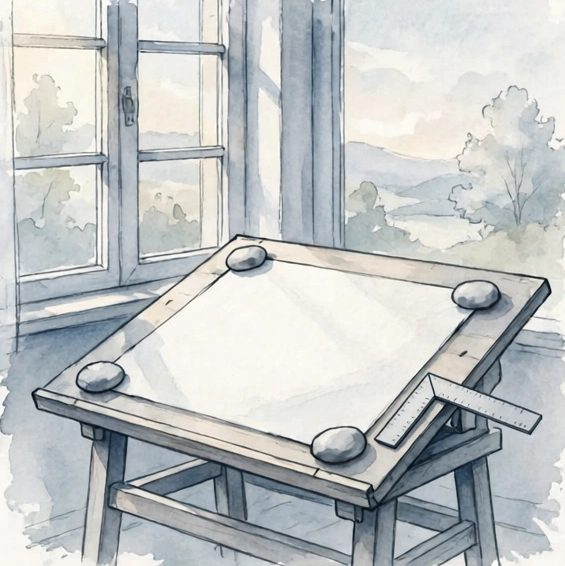
A drafting table by a morning window, one large blank sheet held down by four smooth stones.
The hall opens on a question, and the question is the whole building. It hangs over a drafting table the way light hangs over a morning window: plainly, without ceremony, asking to be looked at rather than admired. What would you create if failure were impossible. Not what would you buy, not where would you go, but what would you make, with your hands and your hours, if the making could not go wrong. The sheet on the table is blank and large. It is held down by four smooth stones, one at each corner, so that nothing about the page yet needs defending.
Most halls begin with an answer. This one begins with a pause, because the question, taken seriously, takes a moment to reach the part of a person that keeps the real list. The first responses are usually borrowed: the impressive thing, the sensible thing, the thing that would look well in a sentence spoken aloud. The house lets them pass like weather. Underneath them, quieter, is the project that has been waiting in the back of the workshop for years, dust on its cover, its shape still exact. The question is a way of walking toward it without startling it.
Nothing in this hall is for sale, and nothing here is promised. The stones on the sheet are not a guarantee; they are only weights against the morning breeze. What the hall offers is a room, a table, and a question asked in the right order, so that a visitor can hear their own answer arrive in their own voice. The rest of the building is arranged around that hearing: a desk, a workshop, benches and shelves, and at the far end the large works, the buildings and bridges and gardens that first answers, listened to properly, tend to grow into.
2The Question, Asked Properly
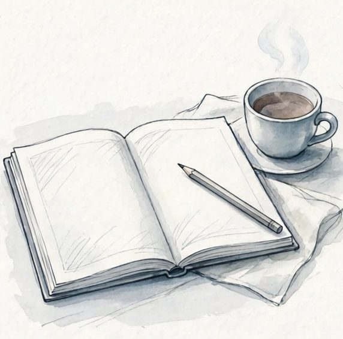
An open notebook with blank pages and a pencil laid across it, a cup of tea beside it.
A question can be asked badly, and this one usually is. Asked at a dinner table, it becomes entertainment. Asked in a hurry, it becomes a wish. Asked properly, it is a slower instrument: it wants a room, a notebook, and enough quiet for the first dishonest answers to finish and leave. The house therefore asks it the way a keeper asks anything that matters, in writing, in the morning, with the pencil laid across the page beforehand so the hand remembers it is allowed to move. Tea helps. Not as a ritual, only because a warm cup gives the silence something ordinary to stand next to.
Asked properly, the question has edges. It does not ask what you would attempt if you were richer, younger, luckier, or someone else. It removes exactly one thing from the room: the possibility that the work itself will fail. The cost stays where it was. The effort stays. The years it would take stay, and so does every Tuesday afternoon of it. What leaves is only the veto, the quiet internal ruling that a thing is not worth starting because it might not come off. The question is narrower than it sounds, and its narrowness is what makes it useful.
There is also a way of answering properly, and the house states it early. Answer in the present tense and in materials. Not a legacy, not a reputation, but a thing with a bench and a budget and a first step small enough to stand on. The notebook on the table has blank pages because the answer is not in the building yet. It arrives when a visitor stops performing the question and starts describing the work: its size, its timber, its seasons, its ordinary difficulties. That description, however halting, is the answer the hall was built to hold.
3The Keeper of the Unattempted Work
Every hall in this house has a keeper, and this one is kept by the Keeper of the Unattempted Work. The title sounds melancholy until you see the rounds. The keeper walks the storehouse each morning past rows of covered shapes: projects conceived and never begun, instruments designed and never built, books outlined to the last chapter and never opened. Each carries a tag. The tags do not say abandoned. They say unattempted, which is a different and more accurate word, because most of these works were never tried and found wanting. They were found frightening, and filed.
The keeper's loyalty is not to success. It is to accuracy. A work that was attempted and failed is carried to another part of the house with respect, its lessons copied into the register. A work that was never attempted stays here, under its cover, because its story is not finished; it has, strictly speaking, not yet had a story. The keeper dusts the covers, checks the tags, and keeps the lamps lit, on the grounds that a visitor may one day walk in, lift a corner of cloth, and recognize the shape underneath as their own handwriting from ten years ago.
Visitors sometimes ask whether the keeper finds the work sad. The keeper's answer, recorded in the register, is that sadness belongs to endings, and nothing in this room has ended. The storehouse is not a graveyard; it is a waiting room with excellent light. Its whole argument is patience. The unattempted work does not decay at the rate people fear. A design keeps. A melody keeps. The wish to build a boat keeps remarkably well, under cloth, in the dry. What does not keep is the number of mornings left to a visitor, and the keeper, who is kind, does not belabor that.
4The Attempt Desk
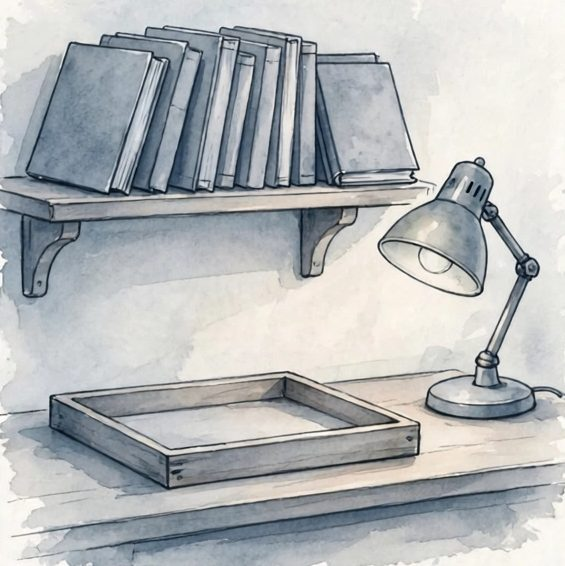
A keeper's desk with an empty in-tray, a lamp, and a shelf of untouched notebooks.
Near the door stands the Attempt Desk, where the hall's business is done. It is an ordinary desk with an extraordinary in-tray: the tray is empty, and it stays empty, because nothing brought to this desk is filed away for later consideration. Whatever arrives here is either attempted or honestly declined, in writing, the same day. The lamp is plain. The chair is the kind that encourages sitting down rather than settling in. On the shelf above are notebooks that have never been opened, kept there deliberately, as evidence that unused materials are not a tragedy. They are inventory.
The desk has one drawer that matters. In it lies the register of attempts: a plain ledger in which every project brought to the desk is entered with its date, its first step, and its current state, in the keeper's small exact hand. There is no column for outcome. There are columns for begun, continued, paused, and set down, because those are the states a maker actually controls. A visitor who expects the register to ask whether the work succeeded will search it in vain. The desk was built by people who believed the attempt is the unit of a working life.
Anyone may use the desk. The rule is only that you write at it standing in your own name, so to speak: no projects entered on behalf of the person you wish you were. You describe the work as it would actually be, at your actual bench, with your actual Tuesdays. The keeper witnesses the entry without comment, the way a lighthouse keeper witnesses a departure. Then the tray is empty again, the lamp is turned down, and the register holds one more line that begins, as all its lines begin, with the plain and sufficient fact of a start.
5First, Take Failure Out of the Room
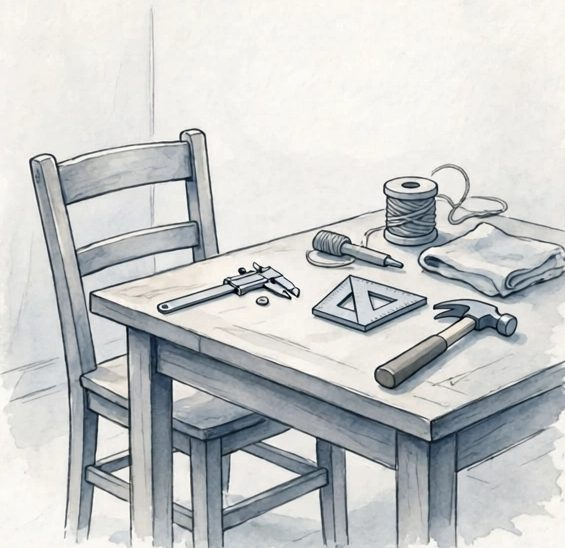
An empty chair drawn up to a worktable, the room cleared, tools laid out and waiting.
The exercise begins with a removal, and the removal should be done physically, the way you would clear a table. Take failure out of the room. Not out of the world: out of this room, for one hour, the way a draught is shut out by closing one particular door. The house is literal about this. The chair is drawn up, the tools are laid out, and the visitor is asked to set the fear of the work failing on the other side of the door, where it can wait without being consulted. It will keep. It is not being argued with. It is being given the morning off.
What stays in the room is worth naming, because the removal is often misunderstood. The bill for materials stays. The difficulty stays; some of the work is hard in the hands and slow in the learning, and no thought experiment in this hall pretends otherwise. The calendar stays, with its limited mornings. Other people's opinions stay, mostly, since they were never really the point. What leaves is a single ruling: the advance verdict that because a thing might not succeed, it should not be begun. That verdict, and only that verdict, is asked to wait in the corridor.
Visitors are sometimes surprised by how quiet the room becomes. Without the verdict, the work on the table is just work: measurable, cuttable, joinable, the sort of problem hands were made for. A boat is timber and patience. A book is a shelf of mornings. A building is a long sequence of ordinary decisions, each one small enough to make. The exercise does not shrink the projects. It shrinks the shadow they cast, which had been doing most of the arguing. The house asks only that the visitor notice the difference in the light, and remember which part of the room it came from.
6What Changes in the First Minute
The change, when it comes, comes early, and the house has learned to watch for it in the first minute. It is not excitement. Excitement arrives later and is less reliable. The first change is quieter: the shoulders come down, the breathing slows to workshop pace, and the project on the table stops being a referendum on the visitor's worth and becomes a list of materials again. Nothing has been solved. Nothing has even been decided. But the work has been returned to the category of things that can be handled, which is where all workable things live, and the visitor's hands, unconsulted, will often reach for a pencil at exactly this point.
There is a second change, close behind the first. The timescale lengthens. Under the verdict, every project is secretly urgent, because it must prove itself quickly or stand condemned. With the verdict outside the door, the same project is allowed its real duration: the boat its two winters, the orchard its decade, the book its unglamorous years. Visitors frequently report that the work got bigger and calmer in the same minute, which sounds like a contradiction until you have watched it happen. A thing permitted to take its true time stops looming. It simply stands there, at its actual size, asking for Tuesdays.
The house records these small changes because they are the evidence the exercise works on a person, not on paper. The register notes the minute, the project, and the first involuntary action: the pencil taken up, the measurement asked for, the name of a supplier remembered. Nothing grander is claimed. A minute is not a transformation, and the hall does not sell transformations. It is a door, noticed. What a visitor does after noticing is their own affair and their own work. But the keeper, who has watched ten thousand first minutes, maintains that most attempted lives can be dated from one.
7The Rules of This Hall
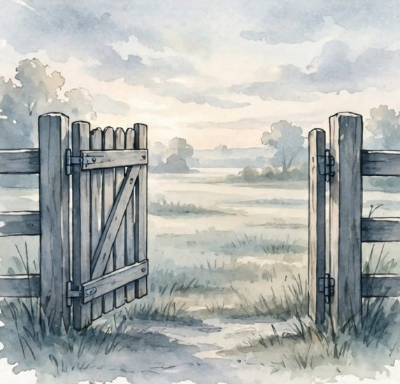
A wooden gate standing open onto an unbuilt field at first light.
The rules of the hall are posted by the gate, where rules belong, and there are fewer of them than visitors expect. First: the question is asked about making, not about having. Second: answers are written down, because spoken answers evaporate and written ones can be revisited. Third: no answer is too small to enter, and none is too large to examine. Fourth: the house sells nothing and promises nothing, and any voice in the building that begins to sound like a promise should be reported to the keeper, who will show it the door. Fifth: what is said at the Attempt Desk stays in the register, in the visitor's own words.
The remaining rules concern honesty, which in this hall is a practical matter rather than a virtue. A visitor may not enter a project they do not actually want, however impressive it would look in the register. A visitor may not enter a project on behalf of their younger self without noting that it is a debt being described, and debts are handled at a different desk. And no one, keeper included, may use the word impossible inside the building except in the question itself, where it has earned its place. Language in a workshop is a tool like any other. It is kept clean, hung up, and used for what it is for.
Breach of the rules is handled mildly. The hall has no interest in scolding its guests; the gate, after all, stands open, and the field beyond it is unbuilt, which is the condition of everything here. A visitor who breaks a rule is simply asked to begin the entry again, slower, in plainer words. Most comply with visible relief. It turns out that people are rarely attached to the impressive version of their answer. They are attached to not having to start. The rules, read carefully, remove every hiding place except that one, and then, very politely, they remove that too, by making starting so small a step.
8A Thought Experiment, Not a Promise
A balance scale on a table holding a feather and a small stone.
Let the terms be plain, because the hall's whole honesty depends on them. This is a thought experiment. It takes one condition of real life, the possibility of failure, and sets it aside on a table, in view, like the small stone on this balance, while the question is examined. Nothing about the world outside has changed. The stone is real and it will be picked up again at the door. A thought experiment is not a spell and it is not a promise. It is a way of weighing what is left when one weight is lifted: the feather, which is the work itself, rises, and can be seen at its true lightness.
The distinction matters because the question has been misused by louder voices elsewhere. It has been printed on posters as though imagining away failure were a method for abolishing it, and people have been charged money for the poster. The house regards this as a misunderstanding of the instrument. A navigator who studies a chart with the storms removed is not claiming the sea is calm. The chart study has a narrower use: to learn the coastline by heart, so that when the weather comes, the knowledge is already aboard. What this hall teaches, if it teaches anything, is the coastline of a visitor's own wanting.
So the experiment is conducted soberly, in the grammar of if. If failure were impossible, what would you build. The conditional is not a weakness in the question; it is the question's entire design. It keeps the visitor honest in both directions: honest that the answer reveals something real, and honest that the real world, where the work must eventually be attempted, still contains the stone. The hall's sign over the gate says attempted bravely, kept honestly. The bravely belongs to the world outside. The honestly begins here, at the balance, with the weights named and neither one hidden.
9Why the Question Is Not a Fantasy
A fantasy, properly defined, is a scene enjoyed for its own sake, with no intention of bringing anything back. The daydream of the lottery win is the standard example: pleasant, weightless, and over. This hall's question fails that definition on a technicality that turns out to be the whole point. The visitor is required to bring something back. The answer must be written in the register, described in materials, and measured against an actual bench, an actual calendar, an actual pair of hands. A question that demands inventory is not a fantasy. It is closer to a survey, and surveys are how building honestly begins.
Consider what the answer actually contains. Strip the condition away and the answer is never a scene of triumph. Nobody, asked properly, describes applause. They describe work: a kiln, a hull, a syllabus, a wall. The content of the supposedly impossible wish turns out to be a list of tasks, most of them ordinary, some of them dull, all of them physically possible on an ordinary morning. This is the finding the hall was built on. The barrier was never woven into the tasks. It stood in front of them, in the shape of a verdict, and the question simply asks the visitor to look past it and take notes.
The house therefore classifies the question as an instrument, and keeps it with the other instruments, oiled and in its case. Like a level, it does not create the flat surface; it reveals where the surface is not flat, and by how much. Used well, it tells a visitor the exact distance between the life being lived and the work being wanted, measured not in regret but in projects, each with a name and a first step. That is information a person can build on, in the real world, with the stone back in the pocket. Fantasy asks for nothing. This asks for the register, a pencil, and the truth.
10The Answer Is a Diagnosis
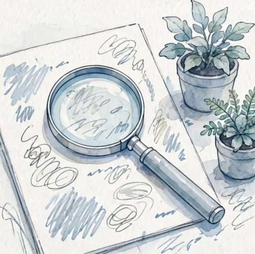
A magnifying glass resting on a page of abstract marks, beside a small potted plant.
The word in this block's title should be taken in its plain, workmanlike sense: a reading. The way a carpenter reads a warped board and learns where the damp got in, the way a gardener reads a border and learns which corner the light never reaches. Your answer to the hall's question is a reading of that kind. It does not describe the work you would do in some other life. It describes, with embarrassing accuracy, the exact place where this life has been stopped, and what stopped it, and how long the stopping has been going on. The magnifying glass on the table is not for the marks. It is for the margins.
Read the answer the way the keeper reads it, for what it indicates. If the answer is a boat, the reading is rarely about boats. It is about a wish for work with visible progress, for days that end with something measurably more built than they began. If the answer is a school, the reading may be about being needed in a particular way, by particular people, at a particular hour. The stated project is the symptom of the reading only in the plain sense that smoke indicates fire: reliably, and worth following to its source. The source, almost always, is a kind of work the visitor has been calling impractical.
The house keeps this block near the front for a reason. Visitors who understand that the answer is a reading stop arguing with it. They stop saying the project is unrealistic, because the project was never the claim. The claim is the pattern underneath: the wish for making over managing, for outdoors over indoors, for the decade-long work over the quarterly one. Patterns like that can be honored at many scales, including small ones, including this year. A reading does not order anyone to rebuild their life by spring. It simply notes, in good light, what the marks on the page are actually saying, so the visitor can stop misreading them as decoration.
11The Hall in One Sentence
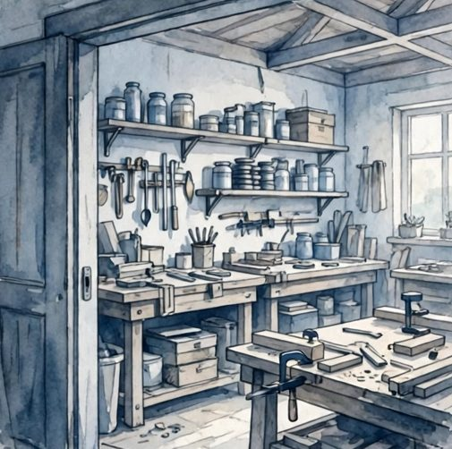
A whole workshop seen from its doorway, benches and shelves in one calm view.
Every hall in this house can be said in one sentence, and the sentence is kept above the door so that visitors who read nothing else still leave with the building in their pocket. This hall's sentence is as follows. If failure were impossible, you would already know what to build, and the knowing is the part worth trusting. That is all. The rest of the rooms, the desk, the workshop, the large works at the far end, exist to give that sentence somewhere to be examined slowly, the way a long bench gives a board somewhere to be planed.
The sentence makes two claims, and the house stands behind both of them precisely because they are modest. The first is that the knowledge already exists. Visitors do not leave this hall with a project invented by the hall. They leave with the project they carried in, finally audible. The second claim is that the knowing can be trusted, not as a guarantee of outcome, which the house never issues, but as evidence about direction. A compass is trusted without being asked to promise the destination is reachable by Friday. The needle's whole job is to be right about north, and the walking remains, as it should, the walker's.
Stand in the doorway a moment before moving on, because the view from here is the sentence made visible. Benches along the walls, shelves in order, work at every stage from raw timber to the one small finished stool: the whole building is an argument that making is a normal activity, conducted by ordinary people at ordinary hours, under no special dispensation from fate. The question at the door was never asking for a different world. It was asking for this room, seen clearly. The visitor who can see it has, in the only sense the house recognizes, already begun.
12The First Rule of the House
Halls accumulate rules the way workshops accumulate jigs, but this house has one rule that outranks the rest, and it is taught first to every new keeper. The first answer is data. When a visitor, asked what they would create if failure were impossible, speaks the first true thing that surfaces, that answer is not to be corrected, improved, made sensible, or made smaller. It is to be written down exactly as it arrived, in the visitor's own words, before any discussion begins. The house treats first answers the way careful people treat measurements: you may take better ones later, but you never alter the first reading.
The rule exists because the corrections arrive so fast. Within a breath, most visitors begin editing: that is too grand, too late, too unlike me, too much to say aloud in a serious building. Each edit feels like maturity. The house has learned to regard most of them as the verdict returning in disguise, wearing the visitor's own voice, which is its favorite costume. The first rule cuts this off at the root. Whatever surfaced first is recorded as found. The editing self is welcome to add a second entry, and a third, in its turn. The register has room. But the first line stands as it was spoken.
Data, in this house, is a word of respect. It means the answer is evidence about a real thing: about where a life has been pressing against its own fence. Handled that way, even an answer the visitor is ashamed of becomes workable, because evidence does not need to be flattering to be useful. The keeper enters it without raising an eyebrow, turns the page, and asks the next question. Visitors who watch their wildest answer received with that calm often sit down, visibly, into a different posture. Something in them has been believed at face value, perhaps for the first time. The house considers that moment the true front door.
13The First Answers
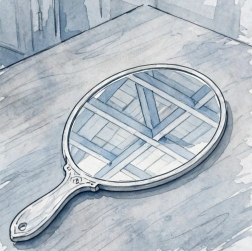
A hand mirror lying face-up on a table, reflecting only the ceiling beams.
The first answers, collected over years, make a strange and moving shelf. The keeper has heard them all: the novel, the boat, the bakery, the observatory, the school for adults who were told they were finished learning. A vineyard. A ferry service between two islands that currently requires a long drive and a favor. A workshop where grandfathers teach joinery to other people's grandchildren. Read in sequence, the register of first answers is the least cynical document in the house. It suggests that what people keep under the floorboards of their lives is rarely greed. It is work. Specific, skilled, unhurried work, in the company of particular materials.
The mirror on this table reflects only the ceiling, and the house placed it here to make a point about where first answers come from. They do not come from looking at yourself. Visitors who study their own faces while answering produce biographies, not projects. The first answer comes from looking up, or out, or down at the hands: from the direction of the work itself. Ask someone what they would build and watch their eyes. When the answer is real, the eyes go to the middle distance, where the thing itself is being looked at, already standing, already casting its small shadow on real ground.
There is no hierarchy among first answers, and the house enforces this with some firmness. The observatory and the allotment shed enter the register in the same hand, on the same line length, with the same courtesy. A first answer is not improved by scale, and the keeper will interrupt a visitor who apologizes for the smallness of theirs. Size is a property of the work. Truth is a property of the answer, and truth is the only property the desk records. The shelf of first answers, taken as a whole, argues that people do not dream too large. Mostly, they have been dreaming at exactly the size of their lives, in secret, for years.
14The Thing That Surfaces First
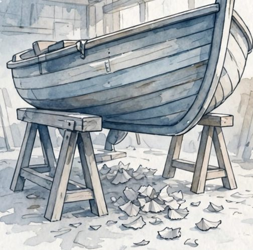
A small wooden boat hull upside down on trestles, fresh shavings beneath it.
It is worth watching what surfaces first, because the order is information. Left to rise on its own, the mind does not usually produce the grandest project or the most respectable one. It produces the oldest. The thing that surfaces first is commonly the thing that has been surfacing, uninvited, for the longest time: in the shower, on the motorway verge of a commute, in the last minute before sleep. It has the persistence of a tune. Visitors are often startled not by the answer's novelty but by its familiarity. They meet it the way you meet a neighbor whose name you suddenly remember you have always known.
The hull on the trestles in this room surfaced, in one visitor's case, every spring for nineteen years. He was not a boatbuilder. He was an accountant of great competence and no remaining illusions, and each spring the wish arrived with the light: to build one small wooden boat, properly, with his own hands, over however many winters it took. He had filed the wish under impractical so many times that the filing itself had become the habit. In this hall, under the first rule, it was simply written down. Hull, trestles, shavings. The entry took forty seconds. The nineteen years had been the slow part.
The house draws a conclusion from cases like his, and it is a gentle one. The thing that surfaces first is not a command. Nobody is obliged to obey an old wish as though it were a debt collector. But it is a witness, and witnesses deserve a hearing before they are dismissed. Nineteen springs is a long testimony. The keeper's practice is to ask one question only: what, exactly, would the first inch of it look like. Not the boat. The first inch of the boat: a drawing pinned up, a timber merchant's number, a Saturday cleared. Surfaces, examined at that scale, stop being overwhelming. They become lists.
15The Project Buried Deepest
Not everything surfaces. The register has a second category, entered more quietly, for the project buried deepest: the one that does not rise in the first minute or the tenth, the one a visitor circles for an hour before naming, and then names while looking at the floor. It is rarely the largest project. It is usually the one most entangled with the visitor's account of themselves: the work they believe they forfeited, or were talked out of, or attempted once, long ago, in a version so young that its ending still aches like a pulled tooth. The house keeps the lights low in this room. There is no hurry here at all.
Burial, the keeper notes, is not the same as death. Things buried in cellars are often buried for keeping: wine, roots, the winter stores. Some projects are underground because the surface years were genuinely full, of children, of debts, of necessary work that deserved its claim. The hall does not indict those years. It simply observes that a cellar is a place things are kept in the dark, and that the keeping has a cost in attention, the way all storage does. The trapdoor is heavy. Lifting it is not demanded of anyone. It is only noted, in fairness, that handles exist, and that the steps go down in good repair.
When a buried project is finally named at the desk, the naming is usually undramatic, almost flat, and the keeper has learned to trust the flatness. This is not a confession and the desk is not a confessional; it is an inventory being corrected. The entry is made, the first step is discussed at the scale of inches, and the visitor discovers that the project, out of the cellar and onto paper, is mostly made of tasks: teachable, purchasable, schedulable tasks, no more mystical than guttering. Whatever it was that hurt has usually retired by then into the past, where it belongs. The work remains. The work, it turns out, was only ever waiting for a listing.
The Attempt Desk
One desk receives all correspondence for this house — questions, corrections, and word of any unattempted work a visitor has been carrying: the thing they would build, the answer that embarrassed them, the first version they cannot bring themselves to start. It is read in the order it arrives, and entered in the register of attempts.
16The Answer That Embarrasses
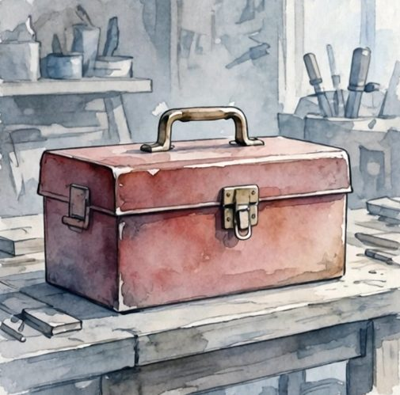
A red toolbox closed on a bench, its handle worn bright.
A reliable sign that an answer is honest is that it embarrasses the person giving it. The house watches for the small laugh, the glanced apology, the phrase you will think this is foolish, which precedes, with near-perfect regularity, the truest entry in the day's register. The embarrassment has a pattern. It is not shame about the work itself; the work is usually honorable. It is embarrassment about being seen to want it: at this age, with this history, after having announced so sensibly for so long that one had put such things away. The red toolbox stays closed on its bench for years at a time, its handle worn bright from being carried to the door and back.
The keeper's handling of embarrassment is procedural, which is why it works. No reassurance is offered. Reassurance implies there was something to excuse. Instead the entry is made in the usual hand, at the usual pace, between the entry before it and the entry after, until the visitor sees their alarming wish standing in a column of similar wishes, looking unremarkable, which is to say looking like work. A vineyard, entered between a ferry and a night school, is just a vineyard. The register is the great leveler of this house. It has no italics for drama and no smaller script for shame.
What the embarrassment is actually measuring, the house believes, is the distance between the wanting and the permission. Children close that distance without thinking; the toolbox is simply opened. Adults rebuild the distance annually, out of other people's imagined opinions, most of whom, examined closely, turn out to be busy with their own closed toolboxes. The hall cannot shorten the distance for anyone. But it can provide a room in which the answer is received as data, written down without a flicker, and that reception, witnessed once, tends to stay with a visitor. The handle is worn bright because the carrying never stopped. Only the opening was postponed.
17The Answer That Has Waited Ten Years
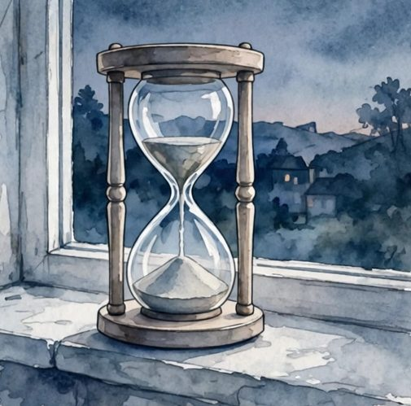
An hourglass on a windowsill, the sand gathered at the bottom, evening beyond.
Some answers arrive at the desk with a date on them, and the date is ten years old. The house keeps a rough tally, and a decade is the most common waiting time by a wide margin: long enough for a wish to have survived several changes of circumstance, several honest attempts to forget it, and the full rotation of sensible objections. A thing that has waited ten years has passed tests that most enthusiasms fail. It has outlasted the job it was postponed for, and sometimes the marriage, and occasionally the century. The hourglass on the sill has all its sand in the bottom glass, and yet the visitor stands there, still describing the same kiln.
The keeper asks about the ten years directly, because the decade is part of the data. What was purchased with it. Sometimes the answer is honorable: the decade raised children, cleared debts, buried parents with proper attention. The house records these without a whisper of reproach; a postponed kiln is not an indictment, and some postponements are simply a life being lived in the right order. But sometimes the decade bought nothing the visitor can name, and the silence after the question is itself the entry. Either way, the tally is now honest, and honest tallies are what the desk exists to produce. The sand, meanwhile, is not an accusation. It is a measurement.
One finding of this hall deserves recording plainly. In the register, no visitor has ever reported that the ten-year wait improved the project, sharpened it, or made its eventual beginning sweeter. Delay is sometimes necessary and often wise, but it is never, in the testimony collected here, a contribution. The kiln waited patiently and gained nothing by it. The house draws from this no scolding conclusion, only a practical one, entered in the margin of the ledger: when a thing has waited ten years, the burden of proof changes sides. It is no longer the wish that must justify itself. It is the waiting.
18Small Answers Count Too
The hall posts this block at eye level, in plain lettering, because visitors consistently mishear the question as a request for magnitude. Small answers count too. The wish to restore one chair, properly, over one winter. The wish to keep bees at the end of a modest garden. The wish to write twelve short essays, one a month, about the harbor you grew up on. These enter the register in the same hand as the observatories, and the house will defend their line length against any visitor who tries to apologize for them. Scale is a property of the work. It has never been a measure of the wanting, and the wanting is what the desk records.
There is a practical wisdom in small answers that the hall has come to respect deeply. A small project has a short distance between the wish and the first finished state. It can be completed inside a season, inside a budget, inside the actual margin of an actual week, and its completion is not a symbol or a rehearsal. It is a finished thing in the world, which can be touched. The keeper keeps a shelf of such completions near the desk, not as trophies but as reference standards: this is what finished looks like at the scale of one person's evenings. Visitors study the shelf longer than they study anything else in the building.
None of this is an argument against large answers, which have their own rooms at the far end of the hall. It is an argument against the quiet discounting of the small, which the house counts among the verdict's most effective disguises. A wish dismissed as too small to matter is still dismissed, and the dismissing, repeated over years, builds the same unattempted storehouse as any grand fear. The pots on this shelf each hold one green cutting, and the cuttings are alive, which is more than can be said for a thousand magnificent intentions. Tend the small answer first, the keeper says, and notice what its finishing teaches the hands.
19The Answer Is Never Money First
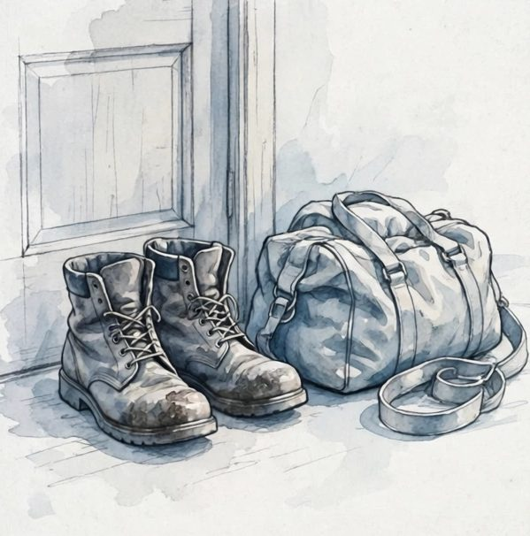
A pair of worn work boots by a door, a packed bag beside them.
In all the years of the register, the house has noticed a regularity so consistent it has been promoted to a finding. When the question is asked properly, the answer is never money first. Nobody, given a room with failure removed, begins by describing an amount. They describe a place, a practice, a product, a company of people around a shared work. Money enters the answer the way weather enters a journey: as a condition to be planned for, respected, sometimes cursed, but never as the destination. The boots by this door are packed for somewhere specific. The bag beside them holds tools, not currency. The register's columns confirm it, entry after entry, year after year.
This is worth pausing on, because the world outside the hall tells the opposite story with great confidence. It says everyone is motivated by the amount, that the amount is the honest answer and the work merely its costume. The register disagrees, quietly, with evidence. Asked what they would make if making could not fail, people name making. The finding does not mean money is unimportant; boats need timber and timber is sold. It means money is instrumental in the precise sense: it is wanted for the work it would release, and the work, when the visitor is honest, can always be named first and costed second.
The practical use of the finding comes when a visitor tries to postpone an entry until the money question is settled, which is the verdict wearing its most respectable coat. The desk's procedure handles it without argument. Name the work first, in materials. Cost it second, in numbers, honestly, at the Attempt Desk's lamp. The costing often surprises: many first answers turn out to require less than the visitor assumed, spread over the years the work would naturally take, and some require almost nothing but permission and Tuesdays. Either way, the order matters. Work first, money second. The register has never once been kept the other way around, and the house intends to keep it that way.
20What the Hands Answer Before the Mind
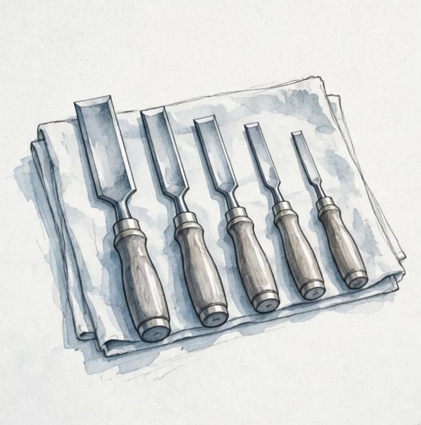
A row of chisels laid on cloth in order of size.
There is a second register in this hall, and it is not written by the keeper. It is kept by the visitors' hands. Watch a person answer the question and, before the sentence is finished, the hands begin their own testimony: shaping the hull in the air, indicating the height of the wall, turning an invisible page at the exact size of the imagined book. The mind, trained in caution, edits as it speaks. The hands, which have no reputation to protect, answer first and answer plainly. The house has learned to read both registers, and when they disagree, it trusts the one laid out on the cloth, in order of size, like these chisels.
The hands know things the biography has forgotten. They remember the school workshop, the grandfather's bench, the summer of competent happiness before work became a performance for other people. Visitors are sometimes undone by this: a person who has described themselves for decades as not practical will find their own hands demonstrating a dovetail with embarrassing fluency. The keeper makes no comment. The demonstration is entered in the register like any other evidence, under the project's name, because a wish that lives in the hands is not a whim. It is a skill that was interrupted, and interruptions, unlike endings, can be resumed.
The house draws a practical instruction from all this, and posts it at the workshop door. When the mind's answer and the hands' answer differ, begin with the hands' answer, at whatever small scale the week allows. The mind argues in verdicts; the hands argue in shavings, and shavings accumulate into evidence that no verdict can easily overturn. One shelf built true will do more for a buried project than a year of deciding. This is not mysticism; it is sequencing. The chisels are laid out in order for a reason. Take up the smallest first. The work will instruct the worker, as it always has, in the order the tools were laid down.
21The Answer Changes as You Listen
An answer given at the desk is not a stone; it is closer to a shoreline, and it moves as the visitor listens to it. The first hearing is often distorted by volume: the loudest element of the answer, usually its scale, drowns the quieter elements, which are usually its substance. A visitor hears cathedral and argues about cathedrals for an hour, before noticing, underneath, the actual wish: to work in stone, outdoors, on something that will outlast weather. The house therefore builds listening time into the procedure. The entry is read back, slowly, at the lamp, and the visitor is asked only what they notice on the second hearing that the first one missed.
The changes are rarely corrections of fact. They are changes of emphasis, and emphasis is where the usable truth lives. The school becomes, on listening, not a building but a Tuesday evening class of nine people. The novel becomes not a monument but a voice, a particular dry humor the visitor had forgotten was theirs. Sometimes the answer changes its materials entirely: the bronze foundry, listened to properly, was always about fire and patience, and a bread oven would hold both. The keeper records these listenings as amendments, dated, beneath the original entry, which is never erased. The register is a sedimentary document, and its layers are the point.
Visitors worry that a changing answer means the first one was false. The house is firm on this point: it means the first one was a surface, and surfaces are how everything real is first met. You do not fault a field for having a topsoil. You note the topsoil, you dig, you note what the digging finds, and the field is yours in a way it was not when you only stood at the gate describing it. The answer changing under attention is not the exercise failing. It is the exercise working at its proper depth, which is exactly as deep as the visitor is willing to keep listening.
22An Answer Is Not a Decision
A fork in a forest path, both ways lit by morning sun.
The desk keeps a rubber stamp for this, because the error is so common it deserves equipment. An answer is not a decision. The stamp is applied, gently, to the corner of any entry whose owner has begun to tremble: the entry records what surfaced when failure was removed from the room. It does not sign the visitor up for anything. No contract exists in this hall, no enrollment, no list of the committed kept anywhere for later use. A person may write down that they would build a boat and then walk out of the gate, into the rest of their life, and never build anything. The house will keep the entry with respect, and no one will telephone.
The distinction is not a loophole; it is the load-bearing wall of the whole building. Answers stay honest precisely because they cost nothing. The moment an answer became a commitment, visitors would begin, quite sensibly, to manage it: shaving the grand ones, inflating the respectable ones, performing the version of themselves they could afford to be held to. The register would fill with strategy and empty of truth within a season. So the house protects the gap between answering and deciding with real vigilance. Answer first, in safety. Decide later, elsewhere, with the stone back in the pocket and the full weather of real life restored to the room.
Decisions, when they come, are honored here too, but they are made at a different tempo and usually at a smaller scale than the answer that prompted them. The answer says a boat; the decision, months later, says a course in lofting at the winter boat school, two evenings a week. The house regards this not as retreat but as translation, the necessary art of turning a truth into a schedule. Both documents matter. The register keeps them in separate sections so that neither corrupts the other: the truth stays whole, the schedule stays possible, and the fork in the path, when a visitor reaches it, has both ways lit.
23The Second Answer Is the Honest One
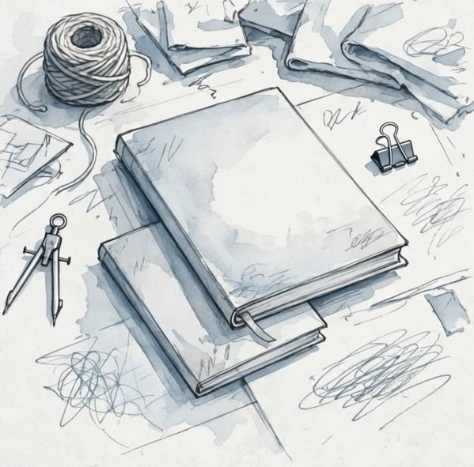
A second notebook, smaller, tucked under the first on a crowded desk.
Ask the question once and you get the answer the visitor has prepared, sometimes for decades, polished like a speech. Ask it a second time, an hour later, after the tea and the tour of the workshop, and a different answer arrives, smaller in the telling and larger in the truth. The house calls this the second answer, and keeps a second notebook for it, tucked under the first on the desk, because the second answer is the honest one with a regularity the keeper no longer bothers to call surprising. It is the answer that was waiting underneath the presentation, in the place where the actual wanting is stored.
The pattern explains itself once you see it. The first answer is given to the room; the second is given to the work. The first describes what the visitor would create if failure were impossible and everyone were watching. The second describes what they would create in the same condition with nobody watching at all, and the difference between the two is the exact measure of how much of the wanting is performance. Performance is not wicked; it has built cathedrals. But a register is for accuracy, and the second notebook, in the keeper's experience, is where the entries stop sounding like manifestos and start sounding like instructions to a pair of hands.
The procedure protects the second answer with particular care. It is never demanded, because a demanded honesty produces a third performance, more convincing than the first two. It is simply made room for: a pause, a walk past the benches, a second sitting at the desk when the visitor thought the business was finished. Most second answers arrive almost apologetically, prefaced by well, actually. The keeper turns to the smaller notebook without any change of expression and writes. The register now holds both truths, the spoken one and the actual one, and the house finds, year after year, that the actual one is the one with Tuesdays in it.
24Write the First Answers Down
The house has one firm instruction for visitors who have heard their answer, and it is not begin today. It is write the first answers down. In the notebook, in ink, in the visitor's own handwriting, with the date. The reason is evaporation. A heard answer feels unforgettable in the room where it was heard; it has the clarity of a struck bell. Three weeks later, at a desk in another town, the same person will be unable to reproduce it, and will produce instead a sensible approximation that has quietly lost the one detail that mattered. Memory edits toward the defensible. Ink does not edit at all. The page keeps the bell's note at its original pitch.
Writing does a second piece of work that hearing cannot. It forces the answer into materials and sequence, because a sentence about a boat must sooner or later say what the boat is made of and which part comes first. Vagueness, spoken, can float indefinitely; vagueness written down shows on the page as a gap, and gaps embarrass the pen into specifics. The keeper has watched a single page of honest writing do what a year of encouragement could not: turn a golden haze into a list of timber, tools, and Saturdays. Nothing about the visitor changed except that the answer acquired edges, and edges are what hands hold.
The notebook itself is then treated with a respect the house extends to few objects. It is not homework and it is not audited. It is the visitor's own register, kept wherever registers live, and the hall asks only that it be kept findable, on the shelf rather than in the cellar of the house, so that on the ordinary bad mornings when the answer feels like a rumor from a more hopeful country, the page can be opened and read in the handwriting of the person who was there. First answers fade. Written ones are consulted. The whole practice of the hall, in the end, rests on that difference, and on a pencil.
25The Workshop
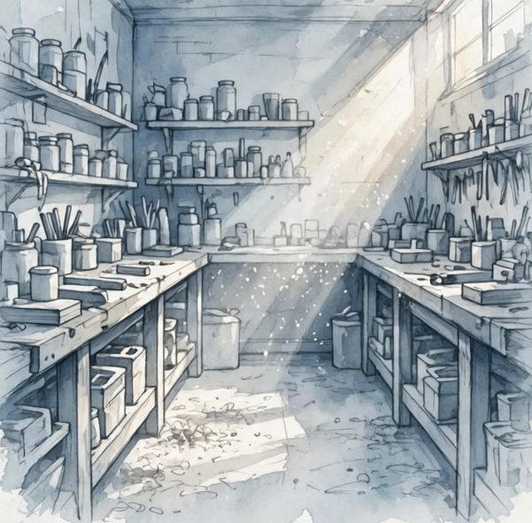
A workshop interior, benches along both walls, sawdust in a shaft of light.
Past the desk, the hall opens into the workshop, and the change of room is deliberate. Answers are one kind of work; making is another, and the house keeps them in sequence the way a day keeps morning and afternoon. The workshop is not a metaphor and the keeper will correct anyone who treats it as one. It has benches along both walls, a floor that is swept nightly, a wall of tools in painted outlines, and the smell, unmistakable and unromantic, of cut timber and machine oil. Everything in it is arranged for a single proposition: that the things described at the desk can be begun here, at bench height, with these hands.
The workshop makes no distinction between trades. One bench holds a half-shaped hull rib; the next, a loom; the third, a soldering iron, a fiddle in pieces, and a notebook of glaze recipes standing in a jam jar of pencils. The house holds that the underlying discipline is one discipline: attention, applied to material, over time, with the willingness to make the bad version first. Visitors who arrive believing their answer belongs to a special category, exempt from benches and shavings and spoiled stock, are walked the length of the room. Somewhere along it, between the loom and the fiddle, the exemption quietly expires.
Light is the workshop's senior tool, and the shaft of it that crosses the room in the afternoon is treated almost as staff. Work is scheduled around it without embarrassment. Fine joints are cut when the light rakes low and shows every flaw; rough work is saved for the grey hours. The house mentions this because visitors persistently imagine that making is a matter of talent descending. It is, in this room, a matter of benches, order, and knowing what the light is doing. The register of answers is kept in the office. In here, the only question is the one the bench asks: what is the next cut, and is it marked.
26A Bench, a Notebook, a Beginning
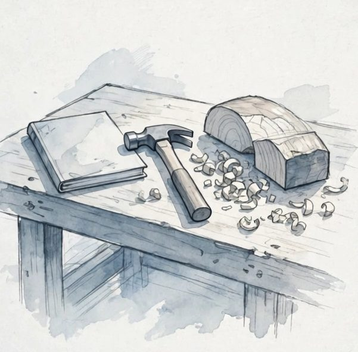
A bench with a notebook, a hammer, and a half-shaped piece of wood.
The workshop's first bench is kept exactly as this room's picture shows it, and every new piece of work in the hall begins there or nowhere. On it: a notebook, open to a page of measurements and one honest sentence about what is being attempted. A hammer, of the ordinary weight that suits most hands. And a piece of wood, half-shaped, because the bench's doctrine is that a beginning should look like something already. The arrangement is not a display. It is a standard. A visitor proposing to start a large work is first asked to reproduce this bench at home: three objects, one of them already underway, nothing else required.
Beginning, in the house's long observation, fails most often at the level of ceremony. People wait for the right studio, the complete set of tools, the cleared sabbatical, the signature of circumstances all in a row, and the waiting has the dignity of preparation while functioning as its opposite. The bench answers this with poverty. A notebook, a hammer, a piece of wood already half-shaped: no one who has those three things is unprepared, and everyone who lacks the third has not begun. The house does not mock the ceremonies. It simply points at the bench and notes that every finished thing in the building passed across one exactly like it.
The half-shaped wood deserves a word of its own, because it offends a certain kind of visitor, the kind who likes beginnings clean. Wood half-shaped is a decision already made, a direction already chosen, a small amount of the future already irreversible. That is precisely its teaching value. Starting feels momentous when it is imagined as a threshold; it feels ordinary when it is a plank with one end already tapered, waiting for the other end. The keeper's advice to every beginner is the bench itself, translated: get one piece of the work into the half-shaped state today, however roughly, and let tomorrow argue with a fact instead of a plan.
27Prototypes Are Questions in Wood and Wire
The workshop's shelves hold a category of object the house values out of proportion to their finish: prototypes. A wired model of a hull, ribs showing, built to test a curve and never meant to float. A cardboard bridge, a clay weir, a single knitted sleeve. The doctrine posted above the shelf is brief. Prototypes are questions in wood and wire. Each was made to ask one thing of the material world, which is the only examiner whose marks cannot be argued with: does this curve hold, does this joint bear, does this shape, in the hand, feel like the thing in the mind. The prototype is how an answer from the desk goes out and gets itself educated.
A prototype succeeds by answering, not by surviving, and this inverts the usual accounting. A model that collapses under its test load has done its full job; it has returned with information that would have cost a fortune to learn at full scale. The house keeps several famous collapses on the shelf, tagged with the question they answered, and the keeper shows them to visitors who speak of wasted work. Nothing on that shelf is waste. Waste is the question never embodied, the curve argued about for nine years in a notebook, unspent material and unspent courage sitting in the storehouse together, both in perfect condition.
There is a discipline to the asking. One question per prototype, stated on the tag, in words plain enough to be answered yes or no by the material itself. Vague prototypes produce vague collapses, which teach nothing and discourage everyone. But a well-tagged model, built in an afternoon from offcuts and wire, will settle arguments that meetings cannot. The house commends the practice to visitors whose answers have grown large and intimidating at the desk. Shrink the question until it fits on a tag. Build the tag's question in wood. The large work, seen from here, is only a corridor of such questions, each one small enough to ask.
28The First Version Is Allowed to Be Bad
A cracked clay pot mended with brass staples, holding dried flowers.
The cracked pot in this room is the workshop's most handled object, and it is not here as a symbol of damage. It is here as a certificate. It was thrown badly, by a beginner, in the first week of a winter course: walls uneven, foot too narrow, a shape no potter would sign. It cracked in the firing, as badly thrown pots do. It was then mended, carefully, with brass staples, by the same beginner, whose second education consisted of learning that a first version is allowed to be bad, and that bad is a stage with a curriculum, not a verdict with a seal.
The permission matters because the opposite belief is the verdict's hardest-working disguise. Somewhere in most visitors is a rule that the first version must already justify the attempt, must show promise legible to others, must not embarrass the maker in the early photographs. Under that rule, nothing in the storehouse would ever have been started, because almost nothing real begins by justifying itself. It begins the way the pot began: lopsided, hopeful, and structurally unsound. The workshop's counter-rule is posted where beginners can see it while their hands are still wet. The first version's only duty is to exist, so that the second version has something to be better than.
Mending, then, is not an apology for the first version. It is the second version arriving, with its sleeves rolled. The staples in the clay are brass because the mender had decided the repair deserved good material, and that decision, visitors are told, is the exact moment a beginner becomes a maker: when the flawed thing is judged worth an hour of careful work rather than a trip to the bin. The pot holds dried flowers now, on the shelf by the window, in daily use. It is not the workshop's best object. It is its most instructive one, and its instruction is entirely practical: bad first, then better, then mended, then used.
29Materials Do Not Care About Your Reputation
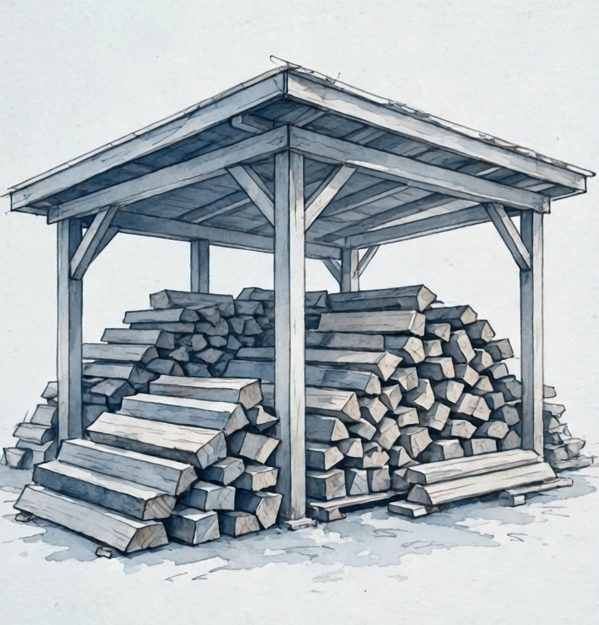
Slabs of raw timber stacked to season under an open shelter.
Under the open shelter behind the workshop, the timber is stacked to season, each slab separated by sticks so the air can move, the whole pile indifferent to opinion. It will be ready in its own time, neither sooner for being praised nor later for being criticized, and the house keeps it in view of the benches as a standing correction to the fear that runs the storehouse. Materials do not care about your reputation. A slab of oak has never once inquired who is cutting it, what their previous work sold for, or whether the neighbors will think the project presumptuous. It asks only whether the blade is sharp and the line is true.
This indifference, properly understood, is one of the kindest facts in the building. Much of what stops work at the desk is social: the imagined audience, the remembered critic, the colleague who will certainly have an opinion at the exact wrong moment. The materials dissolve the audience by ignoring it. Clay responds to pressure and water. Timber responds to grain and edge. Wire responds to tension. None of them respond to standing. A visitor who works a full morning at the bench discovers that the room where failure felt enormous contains, in practice, only these honest negotiations, each one small, each one decided by the work itself.
The keeper sends certain visitors to the timber pile before the desk, reversing the usual order, when their answers have become too entangled with who they are supposed to be. Stand among the slabs. Nothing here knows your name. Your project, translated into materials, is a list of such indifferent substances, waiting to be asked small questions in the right order. The reputation will have to look after itself; it always has. The wood is seasoning. When both are ready, the work begins, and the work, at the bench, in the hands, has no use for an audience at all.
30Work With the Door Open
The workshop door stands open in working hours, and the openness is policy, not accident. Work done here is done where the lane can see it: the half-shaped hull, the collapsed prototype, the bench swept and the bench in shavings, all of it unhidden. The house arrived at this rule by observing its opposite. Work done in secrecy acquires a second, exhausting job: it must also be a secret kept, a story managed, an account prepared for the day of revelation. Makers carrying both jobs finish neither. The open door abolishes the second job entirely. Whatever the lane thinks, it thinks in real time, in small doses, and loses interest by dinner.
The rule is often misread as a demand for exposure, and the house corrects this whenever it arises. Nobody is asked to publish, announce, or explain. The door is open; there is no tour. A visitor may work here for a decade and the lane will know only that someone is building something with a curved rib, which is exactly as much as the lane is entitled to. What the openness changes is internal. A project that need not be hidden need not be defended in advance, and the advance defense, the speeches rehearsed at 3 a.m. against imaginary scoffers, is revealed as the enormous waste of good hours it always was.
Closing time has its own small ceremony in this room. The work is left as it stands, mid-state, unhidden from tomorrow. The broom is put by the frame. The last look back, which every maker takes from the doorway, shows the project exactly as it is: unfinished, unembarrassed, and visibly further along than it was in the morning. The house claims no miracle for this. Only that work done openly, at ordinary hours, in plain sight of a lane that mostly does not care, tends to continue, and continuing, in the register's long accounting, is the whole of the art.
The Attempt Desk
One desk receives all correspondence for this house — questions, corrections, and word of any unattempted work a visitor has been carrying: the thing they would build, the answer that embarrassed them, the first version they cannot bring themselves to start. It is read in the order it arrives, and entered in the register of attempts.
31The Draft Is Not the Verdict
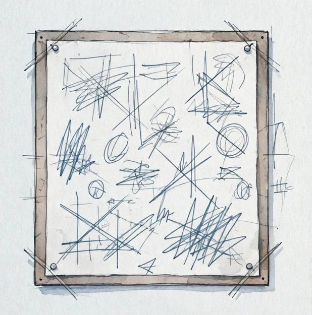
A paper draft pinned to a board among many crossed-out sketches, abstract marks only.
Pinned to the board by the door is a draft: a single page among a thicket of crossed-out attempts, its own lines worked over, arrows in the margin, one passage circled so often the paper has shone. New visitors sometimes read the board as an exhibit of failure, and the keeper lets them stand in the error a moment before correcting it. The board is the workshop's proudest wall. Every sheet on it is a draft, and a draft is not a verdict. A verdict ends a matter. A draft continues it, by the specific means of being wrong in ways that can now be located, named, and improved one at a time.
The distinction runs the whole building, and this is the room where it is taught. At the desk, answers are data. At the bench, first versions are allowed to be bad. Here, at the board, the principle gets its sharpest form: nothing produced in the hall is a judgment on the producer. It is a state of the work, photographed mid-journey. The crossed-out sheets are not the price of the good page; they are its method, as inseparable from it as shavings are from a planed board. A visitor who wants the circled passage without the thicket is asking for fruit without the orchard's earlier seasons, and the house, gently, declines to sell it.
Practical instruction follows, as it always does here. Pin your drafts up. All of them, in order, where you can see the whole argument at once. The progression visible on a board does what memory cannot: it proves direction. On a bad morning, the first sheet and the latest sheet, hung side by side, constitute evidence no mood can cross-examine. The keeper has watched this evidence settle more crises than any conversation in the building. The draft was never the verdict. It was the road, and a road, unlike a verdict, is allowed to be unfinished in the middle and still be exactly what it claims to be.
32Tools for a Maker Without Fear
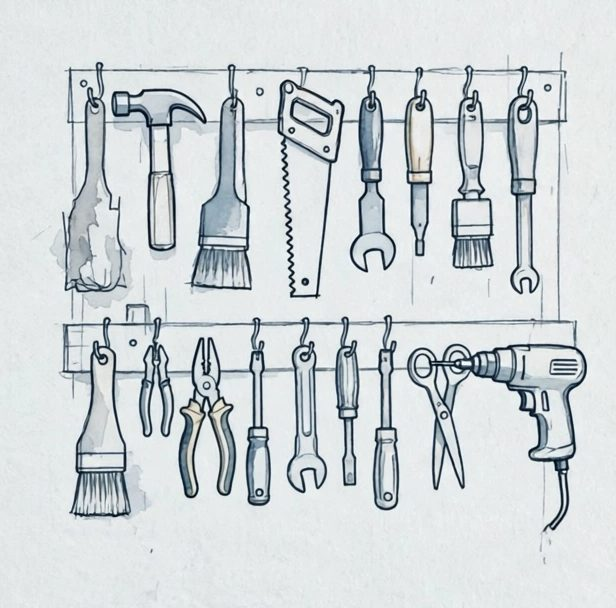
A wall of tools hung in painted outlines, every hook filled.
The tool wall by the north bench is the workshop's idea of a complete sentence: every tool hung in its painted outline, every hook filled, nothing borrowed out and nothing missing. It is shown to visitors not as housekeeping but as equipment for a particular kind of maker, the one this hall was built for: the maker without fear. Such a maker does not need exotic instruments. The wall holds the standard kit: squares and levels, saws in their grades, the chisels laid elsewhere in this hall in order of size, clamps like a row of patient hands. What makes the kit remarkable is only that it is ready, maintained, and familiar, so that no beginning ever waits on a purchase.
Fearlessness, examined at the bench, turns out to be mostly logistics. The projects that die of fear usually die at a gap: the missing tool, the unsharpened edge, the material not yet ordered, each gap small and each one an invitation for the verdict to re-enter wearing the costume of practicality. The wall closes the gaps in advance. Keep the edges keen. Keep the outlines filled. Keep the consumables stocked one deep. A maker so kept can move from an answer at the desk to a mark on wood in a single morning, and the house has measured the distance between those two points as the most dangerous ground in any project. Speed across it is safety.
The wall has one more feature, easy to miss: the outlines are painted for tools the workshop actually uses, at the sizes these hands actually reach for. There are no prestige outlines, no space kept for the magnificent instrument that would announce a serious maker. The keeper regards such outlines as the verdict's favorite piece of furniture. A wall honest about its work holds what the work requires, kept sharp, kept ready. That is the entire technology of beginning without fear, and it can be assembled in any garage, at almost any budget, which is precisely why the house displays it without a ticket or a lock.
33Half-Finished Is a Place, Not a Failure
Midway along the workshop stands a bench that visitors misread at first glance, because everything on it is unfinished: a joint half-cut, a panel half-planed, a glue pot gone cold with the brush still in it. The house keeps this bench deliberately unset, as the room's central teaching. Half-finished is a place, not a failure. It is an address where work legitimately lives, sometimes for a season, sometimes for years, and the register records addresses without embarrassment. A project at the half-finished bench is not in trouble. It is in progress, which is the natural state of everything that has ever eventually been completed by human hands.
The confusion the bench corrects is a real one, and it empties the storehouse faster than fear does. People audit their projects as though each must be either advancing this week or declared dead, and under that audit the half-finished works, the ones paused for money, weather, children, health, get quietly reclassified as failures and abandoned in place. The house's accounting is slower and more accurate. A paused project keeps. Timber seasons. Skills, once in the hands, keep remarkably well. The only true loss is the reclassification itself, the day a maker looks at a half-cut joint and calls it evidence against themselves, instead of a joint, half cut.
So the bench stands as it stands, and the keeper, passing, will occasionally wipe the dust from the panel without touching the work, the way you tend a sleeping thing without waking it. Visitors planning their answers at the desk are brought here before they are allowed to promise themselves schedules. Look at the bench. This is where your project will spend most of its life: neither begun in glory nor finished in triumph, but resting between efforts, in good company, in a swept room. If that address is acceptable, the project is possible. If only the finish line is acceptable, the house advises choosing a smaller project and finishing that instead.
34The Workshop Keeps What the Studio Hides
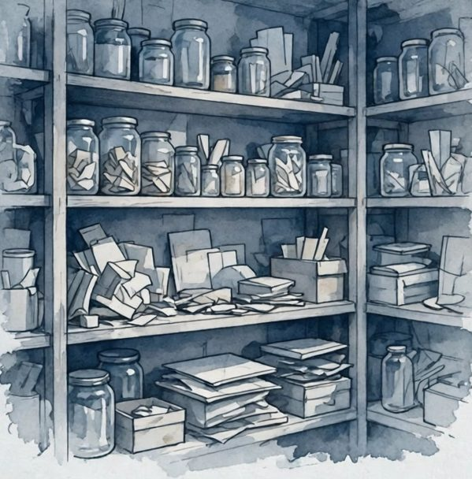
High shelves of jars, offcuts and saved pieces in a storeroom's dim light.
Behind the workshop is the storeroom, and the difference between the two rooms is the difference between hiding and keeping. The studio, in the world outside, hides: the failed canvas is turned to the wall, the spoiled take is deleted, the early work is disowned in interviews. The workshop keeps. Its high shelves hold jars of sorted hardware, offcuts graded and labeled, the curved rib that warped, the glaze tests in their rows of thimbles, each saved piece tagged with what it taught. Nothing here is displayed. Everything here is available. The shelf's argument is that a maker's past work is inventory, not biography, and inventory is supposed to be used.
The practice has economics as well as morals. Offcuts become prototypes; prototypes become jigs; the warped rib, steamed and re-bent, becomes the template that saves the next hull a week. Studios that hide their process must buy everything twice: once in material, once in re-learned lessons. Workshops that keep theirs grow cheaper and wiser in the same motion, which the house counts as the only true economy of making. Even the embarrassments pay rent here. The disastrous first chair, its legs uneven, stands in the corner holding the plant pots at slightly different heights, a joke the room is fond of and a standard the benches quietly respect.
Visitors leaving the storeroom often revise their answers at the desk without being asked. The revision has a pattern: the project shrinks its opening move and lengthens its memory. Keep everything, they have understood, and the work becomes a corridor rather than a cliff edge, each stage standing on the saved stages behind it. The house asks no more of anyone. Begin, keep, use. The shelves will hold what the making teaches, in jars, in order, in the dim good light of a room that has never once been ashamed of how things are actually made.
35Finish One Small Thing First
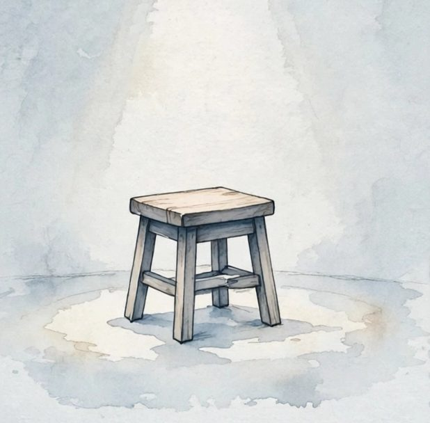
One small finished wooden stool standing alone in a pool of light.
In the middle of the workshop floor, alone in its pool of light, stands a stool. It is small, plain, three-legged, and entirely finished: sanded, oiled, level on its feet, bearing weight without comment. The house places it where every visitor must walk around it, because it is the argument of the whole hall reduced to one object. Finish one small thing first. Before the cathedral, before the boat, before the decade-long work is allowed to make its full claim, finish one small thing completely, and let the finishing, which is a separate skill from beginning and a rarer one, be learned at a scale where it can actually be practiced to the end.
The doctrine is not about thinking small. It is about sequence, and the register supports it with years of entries. Visitors who finish a small thing first go on to attempt their large answers at a rate the keeper describes as simply different in kind from those who begin with the large thing directly. The difference is not confidence, a word the house avoids. It is evidence. The finished stool is a fact in the maker's own history: begun, doubted at the glue stage like everything else, and carried through to the far side, where objects either stand level or do not. A fact like that cannot be argued with by a mood. It can only be added to.
So the stool stands, and visitors are invited, without ceremony, to sit on it. It holds. That small experience, weight borne by a finished thing, is the hall's whole promise, which is no promise at all but a demonstration: finishing is possible, it looks like this, it feels like this, and the distance from a bench of half-shaped wood to this pool of light is crossed by ordinary work on ordinary days. Then the large works at the far end of the hall stop looking like fantasies and start looking like what they are: small finished things, in great number, standing in rows.
36The Bench at Closing Time
The workshop day ends the way it begins, without ceremony, and the closing has its own doctrine worth a block of wall. The shavings are swept into one pile, not as tidiness but as accounting: here is the day's work, in material form, roughly measurable, neither exaggerated nor denied. The tools go back to their outlines. The half-finished work is left mid-state on its bench, under no instruction to apologize. The lamp is turned down last. A maker who can close the workshop properly can open it properly, and the house, which has watched both, insists the two skills are one: the art of treating work as a place you go daily, rather than a judgment you face.
Closing time is when the verdict makes its last attempt of the day, and the room is ready for it. The audit arrives dressed as review: so little done, so slowly, at this rate the boat will take a decade. The bench's reply is the pile of shavings and the register's long perspective. Most large works in this hall did take a decade, of evenings and Saturdays, and the makers who finished them were not the ones who won the nightly audit. They were the ones who learned to close the lamp on an unfinished day without closing the project with it. The distinction, small as it sounds, is the entire difference between the workshop and the storehouse of covered shapes.
There is a sentence the keeper says at closing, to no one in particular, recorded in the register because generations of visitors have asked for it in writing. The work will be here in the morning. It sounds plain because it is plain, and it is the deepest reassurance the house is licensed to offer: not that the work will succeed, which nobody knows, but that it will wait, patient as timber, while the maker sleeps, eats, earns, and returns. Projects do not need to be carried through the night. They need a bench, an outline for every tool, and a door that opens again. The lamp goes down. The pile of shavings stays. The morning, reliably, comes.
37The Large Works
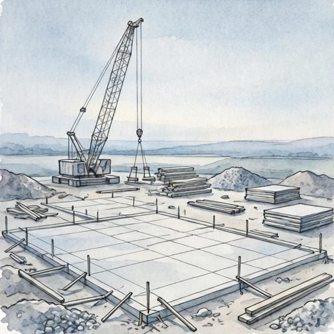
A building site at dawn, the crane still, foundations marked out with string lines.
At the far end of the hall, beyond the benches, the scale changes. The last rooms hold the large works: the answers that arrive at the desk measured not in evenings but in years, not in offcuts but in foundations. The house keeps these rooms for a reason of fairness. A visitor whose answer is a building, a bridge, a district garden, should not have to watch it shrink at the desk to earn the keeper's approval. The large works are received here at full size, walked around, and examined with the same plain procedure as a stool: what is it made of, what comes first, and where, exactly, do the string lines go when the site is still only a field at dawn.
The site at dawn is the large works' honest portrait, and the house insists on the hour. Before the crane moves, before any wall certifies progress, a building is a set of decisions made visible in string and pegs: here the load, here the light, here the door a thousand strangers will use. Most of a large work's life is spent at this scale of intention, long before it is impressive, and the makers who finish such works share a trait the keeper has learned to test for. They can stand in an empty field at first light, among strings, and feel they are already at work. Those who need the crane moving before they can believe are advised, kindly, to finish a stool first.
None of this enlarges the difficulty into legend, which is the point of the whole hall. A building is a stool's discipline at a longer wavelength: materials that do not care about reputation, first versions in the form of models and trial bays, half-finished states that last for years and must be lived in without despair. The string lines on the ground are the largest handwriting in the building and the plainest. They say the same thing the register says, the same thing the bench says. Begin where the pegs go. The rest is sequence, weather, and Tuesdays, multiplied by more hands and more mornings than a stool requires, and not different in kind.
38A Building I Would Raise
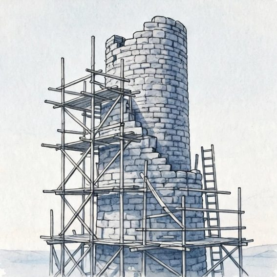
A stone tower rising course by course, scaffolding hugging one side.
Of the large works in the register, the tower is the one the keeper describes most often, because its builder left the fullest account. She would raise a tower of stone on the hill above her town: not a folly, though the town called it one for years, but a stair, a lookout, a room at the top with a table, where anyone could climb and see the valley arranged like an explanation. Asked the hall's question in her sixtieth year, she answered it in one sentence, and then, being a practical woman, asked about scaffolding hire and the price of stone by the load, in that order.
The building of it followed the workshop's rules at tower scale, which is the finding the house most values in her account. The first version was allowed to be bad: the first course, laid as a practice ring at ground level, was taken up twice before it satisfied her, and the stones of those attempts are in the storeroom still. Materials did not care about her reputation, though the town offered opinions freely. The work proceeded with its door open, the scaffold visible from the road, the half-finished state lasting most of a decade and housing, one summer, a family of swifts in the third course, whose tenancy was respected until autumn.
She finished it, and the register records the finishing without adjectives. Course by course is the whole secret, if the word secret must be used: no course skipped, no course asked to be the summit, each one a small finished thing standing level before the next was begun. The room at the top has its table. The town climbs on Sundays. The keeper's marginal note on her entry is the shortest in the book and the one most often copied out by visitors. She did not wait to be unafraid. She hired scaffolding. The house commends the sentence to everyone whose answer involves height, distance, or stone.
39A Bridge to a Place I Love
The second large work in these rooms is a bridge, and the visitor who entered it was precise about its destination in a way the keeper found instructive. He would build a bridge to a place he loved: a far bank where his people had summered for generations, cut off since the old ferry stopped, reachable now only by a long road that nobody drives for an afternoon. The bridge in his answer was not a monument and not an investment. It was a correction to geography, made so that children could again walk to the orchard side in twenty minutes, carrying nothing but the intention to swim.
Bridges, the house notes, are the most honest of the large works, because their entire purpose is connection and their entire method is sequence. You cannot begin a bridge in the middle. You begin with a survey, with soundings, with the unglamorous question of what the banks will hold, and the answer at the desk turned, under this procedure, into three years of preliminary work that the visitor had never counted as part of the project and now entered in the register with something like gratitude. The bridge had been waiting for permission to include its own beginnings. Much of what people call an impossible work is a work whose early, invisible third they had refused to count.
The bridge in the register remains unfinished, and the house reports this without any sense of anticlimax, because the entry is alive: the survey is done, the near abutment is built, the cables are strung and the planks have crossed half the gorge. Its maker works on it in the summers, with his sons, at the pace the weather and the money allow, and the half-finished state, which once would have shamed him into silence, is now simply the bridge's current address. From the near bank you can walk out over the water on the laid planks to the exact middle of the air. Visitors ask if he minds the incompleteness. The register quotes him directly. The middle of the air, he says, was the part he wanted.
40A Garden the Size of a District
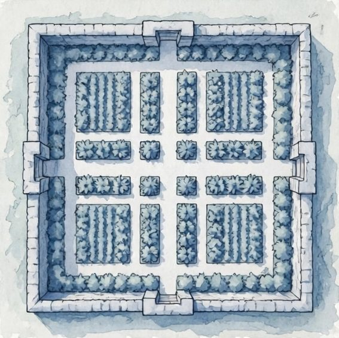
A walled garden seen from above, paths crossing between long beds.
The last of the large works is the one that has surprised the keeper most often, because it arrives at the desk disguised as a modest answer and turns out, on examination, to be the largest of all. A garden the size of a district. Not a park commissioned by a city, but a walled garden built by one pair of hands and then, necessarily, by many: long beds in rows, paths crossing at right angles, a wall built a few stones a week in the early years, espaliered trees older than the garden's second decade. From above, in the plan the visitor drew at the desk, it looks like a page of careful handwriting, each bed a sentence, the whole district a book being written in soil.
A garden is the large work that most thoroughly refutes the verdict, because a garden cannot be finished in the way a tower is finished, and so its maker is freed earliest from the superstition of completion. It is planted in the full knowledge that the planter will not sit in the mature shade of half its trees. Its timescale is not a problem to be solved but the medium itself, like timber for the boatbuilder. The keeper walks visitors through this entry slowly. Here is a work that assumes, from the first spadeful, that the maker is mortal and the work is longer, and proceeds anyway, in rows, at walking pace. If failure were impossible is, in a garden, almost the native climate.
The entry closes the register's large works with an instruction that several visitors have copied onto the flyleaves of their notebooks. Plant for the district, and begin with one bed. The wall can grow a few stones a week. The paths will cross when the beds require them. What the garden asks of its maker is exactly what the stool asked, and the tower, and the bridge: the first small finished thing, honestly done, and then the next, in a sequence long enough to become a landscape. From above, years later, the pattern appears, paths crossing between long beds, that no single season could see. The house knows no better picture of what an answer becomes, attempted bravely, kept honestly, over time.
41A Ship, Because Why Not a Ship
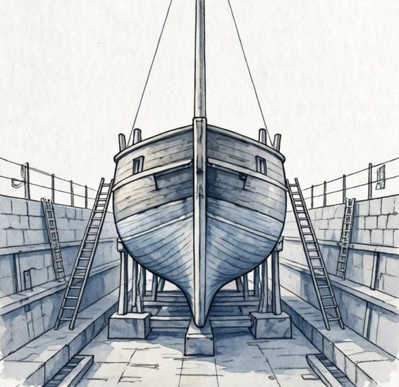
A tall ship in a dry dock, its hull exposed, ladders against the planks.
The question, asked honestly in this room, eventually arrives at a ship. Not a model on a shelf, not a boat for weekends, but a tall ship with masts and rigging, built plank by plank in a dry dock over years. It is the kind of answer people laugh at before they say it, and the laugh is useful, because it marks the exact place where fear had been standing guard. Remove failure from the room for an hour and the ship is simply a large piece of work, no more absurd than a house or a bridge.
A ship built without fear of failure would still cost everything a ship costs. Timber would still need seasoning, iron would still need forging, and the seasons would still set the pace of the work. The keel would take as long as a keel takes. What changes is only the permission. The builder stops asking whether the water will accept the hull and starts asking the older, better questions: how thick, how fastened, how caulked, how true. The work becomes a matter of craft again, and craft is patient. The yard keeps its noise either way: saws, hammers, rope, and the slow music of large things being measured twice.
The Keeper of the Unattempted Work keeps a small ladder against this idea, the way ladders lean against hulls in the dock. Whoever climbs it sees the vessel from the height the work actually requires. A ship is not a fantasy; it is a schedule of honest labours, each one learnable, each one somebody's trade. The hall does not promise the ship will sail anywhere in particular. It only notes that the wish to build one was never foolish. It was merely waiting for a room where it could be said aloud.
42A Library With Rooms for Making
Some libraries lend books and some lend tools, and the one imagined here lends both, with rooms between the shelves where the reading turns into making. A reader finishes a chapter about joinery and walks ten steps to a bench. A child reads about bridges and builds a small one from offcuts before lunch. The books stay clean because the making rooms have their own doors, and the making stays thoughtful because the books are never far away. A low step at each threshold helps the younger readers carry armfuls of books and timber through without dropping either.
Such a library would take years to gather and longer to arrange, and the arrangement would be its own kind of scholarship. Which bench belongs near which shelf. How loud a room may be before the readers drift away. What to lend to a stranger who has never held a plane. None of these questions has anything to do with failure. They are questions of hospitality and order, and they can be answered slowly, one shelf and one bench at a time, by people who care about both. The catalogue, in this design, includes the benches themselves, each with its own card.
The hall keeps this library on its list of works that ask nothing grand of the world. It sells nothing and promises nothing. It only proposes that knowing and making are neighbours who have been kept apart too long, and that a building might correct the oversight. If the roof leaked in the tenth year, the buckets would go under the drips and the reading would continue. A building, like a book, is allowed to be repaired. That was never the frightening part. The reading would continue, and the buckets, in time, would acquire the status of fixtures.
43A School Built Like a Workshop
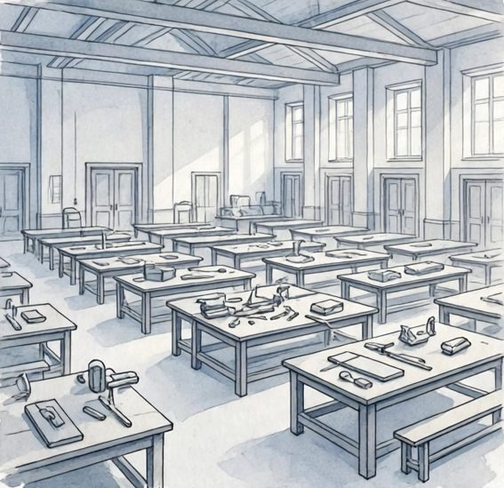
A bright hall with rows of workbenches where a classroom might be.
Imagine a school arranged the way a good workshop is arranged: benches instead of rows, tools within reach, materials stacked where everyone can see them, and long projects on the tables that take a whole season to finish. Lessons would still exist, but they would arrive the way instructions arrive in a workshop, at the moment the work needs them. Measuring would be learned because a board must fit. Writing would be learned because the plan must be explained to the next pair of hands. There would be aprons in sizes, kept on hooks by the door, washed on Fridays.
A school like this would cost what schools cost, and the days would still begin early and end tired. The difference is in what the building assumes about the people inside it. A workshop assumes that its workers are becoming capable, and it arranges everything to help. Desks in rows assume something quieter and smaller. Take failure out of the room and the benches stop looking risky. They look like what they are: furniture for people who are trusted to make real things and to mend their mistakes as they go.
The Attempt Desk keeps a drawing of this school among its most handled papers. The drawing is not a complaint about any real schoolhouse; the hall is not in the business of complaints. It is simply a record of what the question produces when it is asked about learning. Given one room where nothing can go wrong, people rarely imagine a stricter school. They imagine a bench, a window, a patient teacher with flour on her sleeves from the bakehouse next door, and work worth the morning. The drawing is pinned where the light from the tall windows reaches it every morning.
44The Observatory on the Hill
A domed observatory on a hill at dusk, its slit open to the first stars.
On the hill above the town, in this imagining, stands an observatory built by the town itself, stone by stone, over the years when the evenings allowed. Its dome turns on a track that local hands machined. Its telescope was ground slowly, the way lenses must be ground, with long pauses to test the figure of the glass. Nobody involved expected to finish quickly. The stars are not in a hurry, and the builders took their pace from the subject. The path up the hill would need gravel in its wet places, and a bench halfway, for the climb is part of the visit.
An observatory is a peculiar kind of creation, because its product is only attention. It manufactures nothing, repairs nothing, carries nobody anywhere. It exists so that a place can look up on purpose, together, on clear nights, with the shutters open and the lamps low. Take failure away and the building's uselessness stops being an argument against it. Plenty of worthy things are useless in that narrow sense. A town that can look at the stars from its own hill is richer in a way ledgers do not record. The dome's track, kept oiled, turns with one hand.
The Keeper notes that the observatory, of all the works in this room, asks the least courage and receives the most. People veto it not because it is hard but because it is easy to postpone, and postponement is fear wearing a reasonable coat. The hall's suggestion is architectural rather than grand. Pick the hill. Carry up one stone. The dome can wait its turn like everything else worth building, and the first stars are already showing through the open slit. A stone a season would still, in a decade, make a wall worth leaning on during the climb.
45A Theatre That Seats a Whole Town
The theatre imagined here is sized by a simple rule: every person in the town can sit in it at once. No one is left standing at the back, no performance plays to a fraction of the place it belongs to. Building it would mean moving a great deal of earth, raising a roof span wider than any barn in the county, and arguing, pleasantly and at length, about where the benches should curve. The work is large but it is not mysterious. Amphitheatres are an old technology. The earthworks alone would occupy a cheerful spring.
Inside such a theatre, the repertoire would settle into what a whole town can hold in common: the winter play, the summer concert, the school pageant with its hundred small parts, the evening each year when the oldest stories are told from the stage by whoever remembers them best. Nothing about this requires the performances to be perfect. A whole town is a forgiving audience when it has built the room itself. The seats carry a memory of carpentry that softens every judgement made from them. Programmes would be printed on paper thick enough to fan with in July.
Fear vetoes buildings like this by calling them extravagant, and the hall answers in its plainest voice: extravagance is a question of proportion, not of size. A theatre for a whole town is exactly as large as its purpose. What the question reveals, once failure leaves the room, is how many public works were never impractical at all. They were only waiting for someone to count the seats honestly and start with the earthworks in a dry month. Seats counted, the rest is joinery and patience, and the town has never yet run short of either.
The Attempt Desk
One desk receives all correspondence for this house — questions, corrections, and word of any unattempted work a visitor has been carrying: the thing they would build, the answer that embarrassed them, the first version they cannot bring themselves to start. It is read in the order it arrives, and entered in the register of attempts.
46Works That Take Longer Than a Life
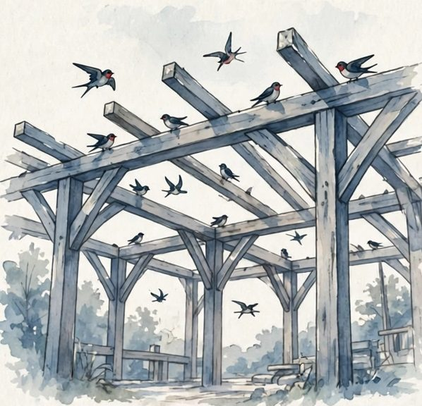
A great timber frame with no walls yet, swallows under the roof beams.
Some works cannot be finished by the person who starts them, and this room keeps a respectful place for those. A cathedral generation understood this without sadness: lay the foundation true, raise the frame plumb, and leave drawings clear enough that strangers can continue. The timber frame in the picture stands open for years, and swallows nest under its beams every spring. The frame is not failing by standing unfinished. It is doing the first part of a long job exactly on schedule. Rain finds the open joints every year and is politely shown out again by the maintenance the carpenters schedule without being asked.
To start such a work, the maker must give up the private pleasure of seeing the end, and that surrender is what fear usually protects. It dresses itself as practicality: why begin what you cannot complete. The hall asks the opposite question. What would you begin if incompletion were not a verdict. Orchards answer quickly, and libraries, and walls that will outlast their masons. The list turns out to be long and dignified, and most of it is made of ordinary materials handled with unusual patience. Their roots go looking for water with the confidence of things that expect to stay.
The Attempt Desk keeps the deeds of these works in a drawer marked with no one's name. Whoever continues them adds a page and leaves the drawer unlocked. This is the house's whole philosophy of long work: begin cleanly, record honestly, and trust the next hands. The maker will not see the roof closed or the trees bearing. The maker sees something else, which is arguably better: the frame standing true in the weather, holding its shape for whoever comes next. Somewhere below it in the valley, scaffolding rises and comes down, rises and comes down, at the pace of generations.
47Leave Room in Every Plan for Weather
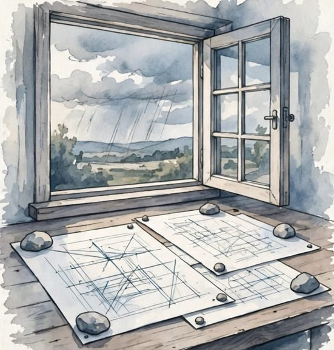
Plans weighted on a table by a window open to changing weather, abstract lines only.
Every plan drawn in this hall is required, by house custom, to leave a margin for weather. The margin is literal before it is anything else: days given to rain, weeks given to frost, a season given to the river being too high to cross. Builders who work outdoors have always known that the sky is a partner in every schedule, and a partner that does not sign contracts. The plan that admits this on paper is not weaker. It is the only kind that survives contact with a real year.
Fear hates the weather margin because it looks like slack, and slack looks like an admission. In truth the margin is where judgement lives. A schedule with no room in it must pretend that nothing will interrupt, and pretence is the most expensive building material there is. Leave the room, and interruptions become ordinary events handled with ordinary calm: the scaffolding waits, the mortar keeps, the crew mends tools and sharpens what needs sharpening. Nothing has gone wrong. It is simply raining, as rain was always going to do. The tools, meanwhile, keep their edges under oilcloth.
The Keeper applies the same custom to works that are not buildings at all. A book can have weather. A ship, a school, a garden can have weather: illness in the house, a supplier gone quiet, a winter that takes the road. The plan for any creation made under this roof includes blank weeks the way a field includes fallow corners. They are not empty. They are where the work rests and the maker thinks, and they are written in pencil, proudly, on the first page. In the margin, visitors are told, is where the maker's judgement can be read most plainly.
48Scale Is a Choice, Not a Test
Asked what they would make, people often answer with a size before they answer with a thing, as if the worth of the work were measured in yards. This room tries to correct the order. First the thing, described plainly. Then its scale, chosen the way a carpenter chooses a length of board: to fit the purpose, the materials, and the hands available. A bridge for a garden stream and a bridge for a river are the same idea at two honest sizes, and neither shames the other. The shelf model is not a lesser ambition; it is a study, and studies are how large things learn their shape.
Fear prefers scale to be a test, because tests can be failed in public. Make it big enough, fear says, or do not pretend it counts. The hall has noticed what this produces: works inflated past their purpose, collapsing under their own importance, and small works never started at all because their makers had been taught to want a grander verdict. Remove the test and the sizes come back into proportion. Some creations want to be enormous, like the theatre and the ship. Some want to fit in a coat pocket, and the pocket is not a lesser address.
The Attempt Desk therefore records every project's dimensions in pencil and its purpose in ink. Dimensions change as materials and seasons dictate; the purpose stays readable. A maker who has chosen a scale freely can also change it freely, enlarging the garden wall or shrinking the boat, without confessing anything. Scale is a measurement. It has never once been a measure of the person holding the tape. The tape itself is kept in a drawer at the Attempt Desk, brass tipped and slightly stiff, and it has measured ships and music boxes with complete impartiality over the years. Nobody has ever asked it which was worth more, and it has never once volunteered a view.
49Works for Others
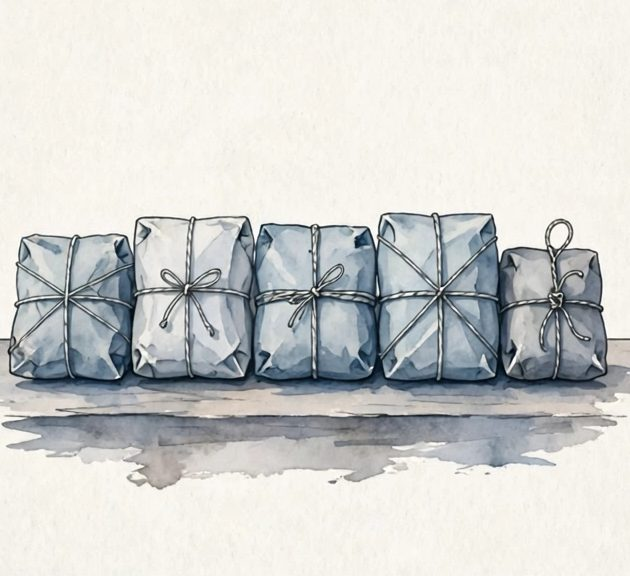
A row of wrapped parcels on a table, each tied in a different way.
Something shifts in this room when the question turns outward. Ask what a person would create for themselves and the answers come slowly, hedged with apology. Ask what they would make for somebody else and the list lengthens at once: a house, a boat, a book, a dinner service, a winter's worth of firewood split and stacked. The Keeper has watched this happen at the Attempt Desk for years and trusts it completely. Works for others are the question's most honest answers, because the heart is quicker than the censor.
Making for another person also simplifies the arithmetic of courage. The doubts that protect the self lose their standing when the beneficiary is someone else. A maker will attempt for a friend what pride would never attempt for its own sake, and will persist through the awkward middle stages because the parcel, so to speak, already has a name on it. The work still costs what it costs. The hours are the same hours. But the fear that usually guards the gate finds it has no business there, and wanders off.
The parcels on this table are tied in different ways because the makers were different people, and the hall approves of the variety. Twine, ribbon, a strip of sailcloth, a knot learned at sea. What they share is direction: outward. The house sells nothing and promises nothing, so these works are not inventory. They are evidence. When the register of unattempted work is read aloud, the longest and warmest section is always the one headed with other people's names. The parcels leave the table at different speeds, some by post, some by hand, some carried no farther than the next street.
50A House for Someone Who Needs One
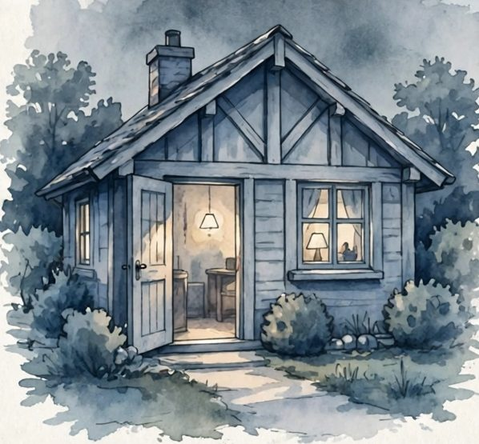
A small house with its door open, a lamp lit in the window at dusk.
Of all the answers given at the Attempt Desk, this one returns most often: a house for someone who needs one. Not a mansion, not an estate. A small sound house with a door that fits its frame, a roof that keeps its promises in November, a stove that draws well, and a window over the sink because washing up deserves a view. The people who describe it describe it in detail, room by room, the way you describe something you have already built many times in your mind. A path of flat stones leads to the door, because arrivals matter.
The work itself is well understood. Foundations, framing, roofing, plumbing, the long tail of finishing that takes as long as everything else combined. Volunteers raise barns; neighbours raise each other. What stops the small house, in the world outside this room, is rarely skill or timber. It is the tangle of permission and money and the fear of being seen to attempt something so plainly good and getting it tangled wrong. In this hall the tangle is set aside for an hour, and the house stands clear: buildable, describable, waiting.
The Keeper keeps the lamp lit in this window on purpose. A house for someone who needs one is the purest case the question knows, because its success is measured by somebody else's ordinary evenings. Kettle on. Door locked against nothing more sinister than the wind. The hall claims no credit for the idea; it belongs to everyone who has ever given it. The hall only keeps the door open and the description on file, in case the world decides to agree. The description ends, as all the Keeper's favourites end, with the stove drawing well on a cold night.
51The Gift That Cannot Be Bought Back
Some creations, once given, cannot be reclaimed, refunded, or quietly taken off the record, and this room honours them separately. A tree planted in another person's garden. A song taught to a child, who will sing it wrong and then right and then to children of her own. Skills passed hand to hand at a workbench. These gifts leave the maker's keeping entirely. They cannot be bought back because they were never really sold, and their value travels in directions no receipt describes. The box in the picture held seed one spring and letters the next, and is empty again now, by design.
Fear dislikes irreversible gifts for an obvious reason: they cannot be edited. A maker who is afraid wants a draft of everything, a version that can be withdrawn if the room goes quiet. The unbuyable gift refuses drafts. It goes out as it is, knots and all, and takes its chances in somebody else's weather. The hall notes, gently, that this is also the description of every real gift ever given, and that the ones remembered longest are usually the ones that left the maker's hands for good. It goes out as it is, and the register moves on to the next line.
The Keeper keeps the plain box in this picture empty, as a reminder of the correct final state. The making was the possession; the giving is the completion. Whomever the gift reached now owns its future entirely, including the right to use it in ways the maker never imagined. A creation that can survive being owned by someone else, changed by someone else, loved or neglected by someone else, has passed the only test this room respects. It was real enough to let go. The empty box goes back on its shelf, ready for the next thing worth letting go.
52A Machine That Gives Time Back
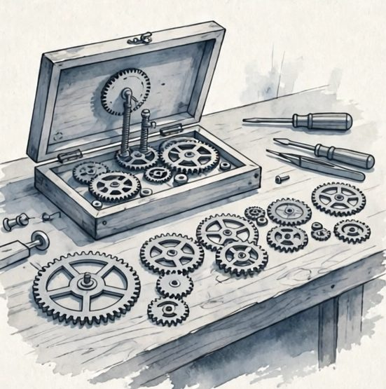
A clock mechanism opened on a bench, its gears laid out in order.
The invention described most wistfully at the Attempt Desk is not a machine that produces anything. It is a machine that returns something: an hour in the morning, an evening unclaimed, the long slow afternoon that used to exist before every task learned to shout. Its inventors draw it variously as a loom that finishes the plain work, a mill that grinds without attendance, a small brass engine that does the accounts and keeps its opinions to itself. The drawings differ. The longing is identical. One drawing shows the hour arriving in a small brass bucket, which everyone agrees is the honest part.
Such a machine would still need building, and building it would consume the very stuff it promises to return. The iron would not care about the irony. Gears must be cut one tooth at a time, and the first model would give back nothing but lessons. The hall insists on this paragraph in every scheme, because the question removes failure, not effort. Even in this room, time is spent before it is saved, and the ledger of hours must balance like any other. The first model, the Keeper suspects, would also need winding, feeding, and forgiving, like everything else in the building.
What the machine gives back, if it is ever finished, belongs to its owner in the oldest sense: unscripted time, the raw material of every other work in this hall. The Keeper suspects that is why the invention is described so often and attempted so rarely. It is not the gears that frighten people. It is the suspicion that, handed a free evening, they would finally have to decide what it is for. The machine waits on the bench, patient as clocks are. The gears on the bench are laid out in order, and the order, at least, has already given somebody pleasure.
53Work That Makes Other People's Work Possible
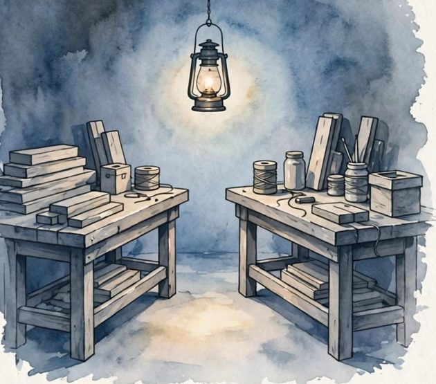
Two workbenches facing each other across a shared pool of lamplight.
Behind every visible creation stands an invisible one: the bench built before the cabinet, the road graded before the harvest, the catalogue made before the library could be searched. This room keeps a bench of honour for the enabling works, the creations whose whole purpose is to make other people's work possible. They are described quietly at the Attempt Desk, often by people apologising for the plainness of the idea, and the Keeper has learned to stop the apology early. Plainness is the point. The lamplight in the picture is doing enabling work of its own, and has never once asked for a mention.
Enabling work has a particular dignity, because its maker agrees in advance to be forgotten by the finished thing. Nobody reads a book and thanks the road the paper travelled. Nobody eats the bread and praises the millstone's dressing. Yet remove the enablers and the visible world stops within a week. Fear vetoes these works by calling them unglamorous, which is fear's laziest argument. In this hall the benches face each other across shared lamplight, and both are considered the front of the workshop. The millstone, dressed and turning, asks for no mention either, and the flour is finer for its silence.
If failure were impossible, the Keeper believes the enabling works would be claimed first and proudest. The well dug for the whole street. The boathouse anyone may use. The set of sharp tools, maintained and lent without a lecture. Such works multiply quietly for decades, and every creation they enable is partly theirs. The hall keeps their register in the same ink as the ships and theatres. It is a short step, after all, from making a thing to making a thing possible, and the second step is usually the longer kindness.
54A Book Written for One Reader
Somewhere in the register there is a book that was imagined for exactly one reader: a father, a friend not seen in thirty years, a daughter at the age the writer once was. It is not a diary and not a letter, though it borrows courage from both. It is a real book, with chapters and an argument and jokes placed where only that reader will fully catch them, written at the pace books require and bound properly at the end, once, in a single copy. The writing desk imagined for it stands by a window, with the good pen kept in a drawer by itself.
Writing for one reader changes the work in useful ways. The audience whose opinion actually matters is small enough to imagine clearly, so the sentences stop performing and start communicating. The book can be exactly as long as its subject needs, no longer. It can include the family story, the technical chapter, the apology and the recipe, in whatever order the one reader will best receive them. Fear shrinks in such company, because the vast indifferent public that haunts most writers has not been invited into this room at all.
The Keeper is often asked whether a book for one reader is a waste of the years a book takes. The hall's answer is kept short: count the readers of most books honestly, and then count again the weight of being read completely by one person who needed exactly those pages. The single copy on this table is not a lesser edition of anything. It is the whole print run, finished, delivered, and shelved in the one library it was written for. Copies for anyone else would be a different book, and the author is under no obligation to write it.
55The Creation That Asks Nothing in Return
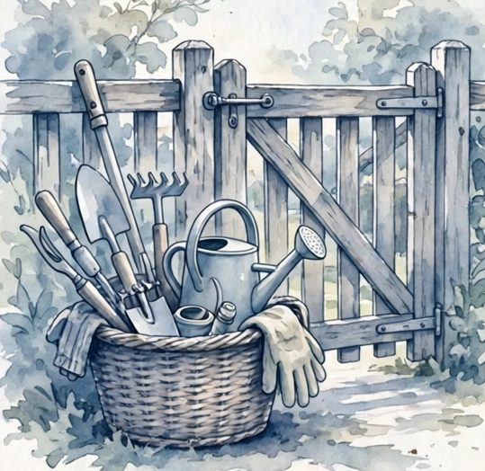
A basket of garden tools left by a gate, for whoever needs them.
This room's favourite experiment is to ask what a person would make if the making could ask nothing back: no payment, no gratitude, no name on a plaque, no audience keeping score. The answers that survive the conditions are few and strangely pure. A garden planted along a public path. A bench repaired anonymously, year after year. A set of tools left by a gate for whoever needs them, replaced without comment when they wander off, as tools by gates are known to do. The tools come back most evenings, which the Keeper records as the strangers' half of an unspoken arrangement.
Such works change the maker more than any commission can, and the Keeper thinks the reason is bookkeeping. Most making keeps a ledger somewhere, even a secret one, and the ledger quietly taxes every hour. A creation that asks nothing in return closes the ledger. The hours become simply spent, like weather, and the maker discovers how much of the usual fatigue was never in the hands at all, but in the accounting. What remains is the plain pleasure of a thing done properly for its own sake. The bench by the harbour, mended again, takes the evening sun.
The hall sells nothing and promises nothing, so it is well placed to keep these works on file without spoiling them. They are recorded without names, in a hand the Keeper uses for nothing else. A stranger reading the register would learn that a stretch of path somewhere is shaded, that a gate somewhere has tools, that a bench by a harbour takes weight again. The record is the whole reward on this side of the gate. On the other side, there is just the shade, being shade, for whoever passes.
56Build the Thing Your Friend Described Once
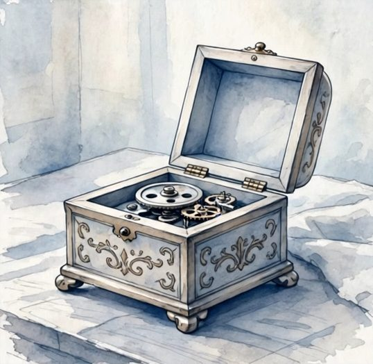
A music box with its lid open on a table, in quiet light.
Every friendship contains an unfinished invention. A friend described it once, perhaps years ago, across a kitchen table: the shelf that would fold against the boat's curve, the music box that would play the tune from the summer house, the particular lamp that ought to exist and does not. The description took four minutes. It has been remembered, in some cases, for decades, by a listener who was not even the person meant to build it. This room proposes the obvious: build the thing your friend described once. The tune it plays is written down nowhere, which has not prevented anyone from humming it.
The work has a head start that other projects envy. The design exists, tested by years of being retold. The need is proven, because the friend kept mentioning it. And the maker's motivation is the sturdiest kind there is, immune to fashion and markets alike: one specific person's delight, pictured in advance. Difficulties will still arrive on schedule, since materials and tolerances have never once cared about motivation. But the long middle of the project, where most works are abandoned, is lit the whole way by a known face at the end of it.
The music box in this picture was described, the Keeper happens to know, in a single sentence in 1987, and built at last in a winter when failure had been temporarily excused from the premises. It played slightly slowly. It was received the way summonses are not and letters from far away are. The hall keeps the story filed under method rather than sentiment: if you cannot think what to create, ask what your friends have already designed for you, out loud, while you were listening. The box sits in its quiet light on the table, wound by whoever passes, playing to the room.
57A Garden Planted for Strangers
The garden in this picture will be enjoyed almost entirely by people its planter will never meet. It runs along a path strangers use as a shortcut, and it is planted for their benefit: early bulbs for whoever passes in March, shade arranged for August, something scented near the gate for the evening walk home. The planter tends it in the early hours and is rarely seen. The garden's whole public life happens in her absence, which she considers the correct arrangement and would not change. A watering can lives under the wall for her use, dented, faithful, and refilled by more hands than hers.
Gardening for strangers clarifies the question wonderfully, because a garden cannot be hurried, hidden, or faked. The soil asks its price in seasons. Slugs and late frosts file their objections in the usual way, and the planter answers them with the usual patience. Failure being excused from this room does not excuse the weather, and nobody here pretends otherwise. What is removed is only the fear of being judged by the passersby, and it turns out the passersby were never judging. They were hoping the roses would make it, the way everyone hopes at a garden gate.
The Keeper keeps no record of which compliments this garden has received, having agreed with the planter that compliments are not the crop. The crop is a hundred small unrecorded improvements in the days of people cutting through between the wall and the path. If a creation can be measured by the number of strangers whose morning it briefly repaired, then this narrow strip, planted thick and left open, is among the largest works in the hall. The gate, for its part, is never locked, and the path through is worn exactly the width of a person's ordinary day.
58What I Would Make for the Young
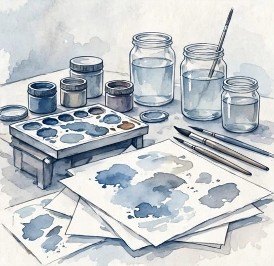
A low table set out with paints, paper and jars of water.
Ask what people would make for the young and the room fills with objects built at a low height: workbenches sized for small arms, boats that forgive beginners, libraries with ladders meant to be climbed, musical instruments cheap enough to be lent and sturdy enough to be dropped. The makers lean over their descriptions the way adults lean over a table set for children, adjusting everything downward, making everything reachable. It is the most physically affectionate section of the whole register. There are stools that stack, a sink at the right height, and jars that open under small hands without a struggle.
The young, in these plans, are never treated as an audience. They are treated as colleagues who happen to be shorter. The works are designed to be used up: paper that is meant to be covered, tools that are meant to be dulled and resharpened, kits whose final page says to invent the next project without the kit. Fear, where it appears in this room, wears an adult face. It worries about waste, about mess, about standards. The makers, excused from failure for an hour, keep answering in the same direction: toward the low table, the open jars, the good light.
The Keeper notes that nothing in this section is nostalgic, though adults often arrive expecting nostalgia. Nobody here is rebuilding their own childhood. They are building the workshop, the boathouse, the reading corner they can see clearly now that they know what was missing. The young will modify everything anyway, at once, without asking permission, which is precisely what the works are for. A thing made for the young succeeds by being taken over. The register keeps their future modifications in pencil, knowing the young will revise in ink, at speed, and without asking the hall.
59What I Would Make for the Old
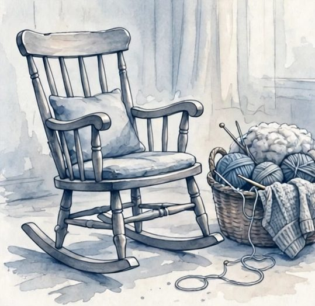
A rocking chair beside a basket of wool and half-knitted work.
The register's plans for the old are quieter and more exact than its plans for the young, and they repay attention. Handrails placed where hands actually reach for them. Kettles that pour kindly. Gardens raised to the height of a seated gardener, so the work can continue at a chair's pace. Books printed in letters large enough to read by lamplight without apology. None of it is glamorous. All of it is described by its makers with the care of people engineering dignity, which is a precise discipline. Even the door handles are specified: lever handles throughout, kind to stiff hands and easy with an armful of shopping.
What the old are offered here, above all, is continuation. The raised bed assumes the gardener intends to go on gardening. The well-balanced tools assume the maker intends to keep making. Too many designs for old age are really designs for stopping, upholstered and well meant. This room refuses them politely and files them elsewhere. Its makers, excused for an hour from the fear of getting old age wrong, produce instead a catalogue of ways to keep going: slower where slowness serves, assisted where assistance helps, unchanged wherever nothing was broken.
The rocking chair in this picture stands beside work in progress, and the Keeper chose the pairing deliberately. Rest, in this hall's understanding, is not the opposite of making but one of its scheduled rooms, like the weather margin in a plan. The old who rock here are between tasks, not beyond them. The wool is half knitted. The other half is not a problem to be solved in this paragraph or any other. It is simply the next row, waiting at the pace of the chair. The basket holds two colours of wool and a pattern folded to the row in progress.
60The Best Works Have Somebody's Name on Them
The register closes its middle volume with an observation the Keeper has tested against every section. The works people describe most vividly, when failure is excused from the room, are almost never anonymous ambitions. They carry somebody's name: for Marta, for the night ferry crew, for the child who asked, for the friend who described it once. The name might be the maker's own, signed small underneath a beam. More often it is the name of the person the work is for, and that name does the work of a keel. It keeps the whole enterprise upright.
A name disciplines a project the way dimensions discipline a drawing. Vague works drift; named works hold their course through the long middle, because at every discouraging measurement the maker can ask the only question that matters: is this right for her, for him, for them. The question survives bad weather and thin budgets. It survives the maker's own uncertainty about everything except the person. Fear, which is excellent at dissolving general intentions, has almost no grip on a work with a name on it. It cannot argue with a name.
The hall therefore keeps its forms simple, and the first line of every form is the oldest question in the building. Not what, not how large, not how long. Who is it for. The ships and schools and observatories in the earlier pages all have their answers written in, in various hands. The Keeper recommends the practice beyond these walls without insisting on it, the way one craftsperson recommends a grip or a stance. Try the name first. The work that follows tends to know its own size, its own pace, and the way home.
The Attempt Desk
One desk receives all correspondence for this house — questions, corrections, and word of any unattempted work a visitor has been carrying: the thing they would build, the answer that embarrassed them, the first version they cannot bring themselves to start. It is read in the order it arrives, and entered in the register of attempts.
61The Wild Inventions
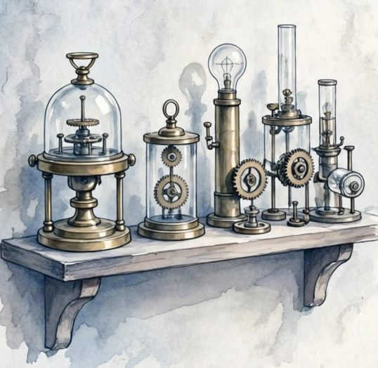
A shelf of strange devices in brass and glass, none of them labelled.
The wild inventions are kept on the upper shelves of this hall, where the light is good and the labels, by long custom, are left off. Brass and glass predominate. So do hinges in unexpected places, lenses ground for purposes their grinders declined to specify, and mechanisms that turn beautifully when a handle is offered, driving nothing the eye can identify. Visitors ask what the devices are for, and the Keeper gives the answer this room prefers to all others: they are for the second shelf of the mind, where a thing may be finished before it is understood.
Invention, freed for an hour from the fear of ridicule, behaves differently from invention under examination. It follows curiosities around corners. It spends a month on a joint because the joint is interesting. It produces, along the way, a quantity of honest uselessness that would shame a factory and delight a child, and the hall counts the delight as the sounder accounting. Many useful things began as somebody's shelf of strangeness, kept dusted through the years when nobody, including the maker, could have said what it was for. The shelf accepts one new device a year, on average, and rejects none for strangeness.
The rule of this section is simple and kept strictly: a wild invention must be finished to be shelved here. Sketches go elsewhere. The devices on these shelves are complete, polished, wound, and working, whatever their work is. Finishing is the maker's half of the bargain with strangeness. It says the thing was taken seriously even when it could not be taken literally, and that seriousness, given fully to an unserious object, is one of the purest pleasures the hall has on record. Dust is kept off them with the same brush used for the hall's respectable instruments, without distinction.
62An Invention Nobody Asked For
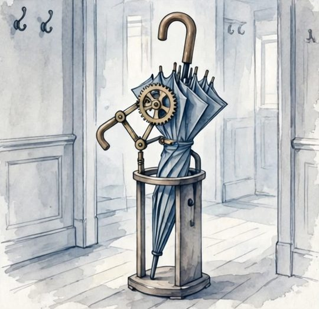
A peculiar folded umbrella contraption in a hallway stand.
Nobody asked for the umbrella contraption in the hallway stand, and its inventor is the first to say so. It folds in three directions, shelters an area its maker describes as generous, and requires, by his own cheerful admission, both hands and some practice to open. He built it because the problem of the umbrella had been bothering him since boyhood, the way a tune bothers a person, and one winter he decided to settle the matter at the workbench rather than carry it any longer. Its handle is wrapped in green cord, a decision he defends as purely practical and entirely final.
Unasked-for inventions obey a different economy from commissioned ones. There is no client to please, no specification to meet, no one to blame at the end but the bench and the weather. What there is, in abundance, is the peculiar freedom of a solution looking for its problem in the open air. Some such inventions stay solutions to nothing for a century and then meet their problem on a street corner. Others remain permanent residents of hallway stands, admired by guests, demonstrated after dinner, rained on only under controlled conditions.
The hall files the contraption without embarrassment beside its ships and schools, because the impulse that made it is the same impulse at a different scale. A person noticed that a common thing could be otherwise, and followed the noticing into wood, wire, and oilcloth. Whether the world adopts the result is the world's affair. The Attempt Desk records the attempt in the same ink as everything else here, and the umbrella, folded in its three directions, takes up its small exact space in the stand. Guests who borrow it in a shower return it with the respect due to a working experiment.
63A Device for Listening to Houses
The device for listening to houses was invented by a carpenter who spent his working life inside other people's walls and came to believe that buildings announce their troubles long before they show them. His instrument is a modest arrangement: a brass ear trumpet, a membrane of his own devising, and a wooden housing that rests against beams, pipes, and joists. With it, he claimed, a careful listener could hear water travelling where water should not travel, and draughts reading the house like a score. He carried it in a canvas roll, with the membrane wrapped in cloth, the way musicians carry instruments.
Whether the instrument works as advertised is a question the hall has never pressed. Its inventor demonstrated it with ceremony, moving along a beam in an attitude of deep attention, calling out findings the way anglers call out fish. Some findings proved true. A pipe was indeed sweating inside the north wall. Others remain unverified to this day, and the Keeper, who respects a good instrument, files them under pending. The device keeps its shelf. Pending is a respectable category in this building, and a large one. Pending findings are written in the same hand as proven ones, only with a small star.
What is certain is that the invention changed how its maker moved through houses. He went slowly. He listened at doors before opening them and laid a hand on stair rails the way one greets an old animal. If the device did nothing else, it taught a man to attend to the structures sheltering him, and attention of that quality is an invention in itself. The brass trumpet stays polished. The wall it aims at has never once complained. Houses visited by the device tend to be mended sooner afterwards, which may be its whole mechanism, the Keeper allows.
64The Boat That Rows Itself Home
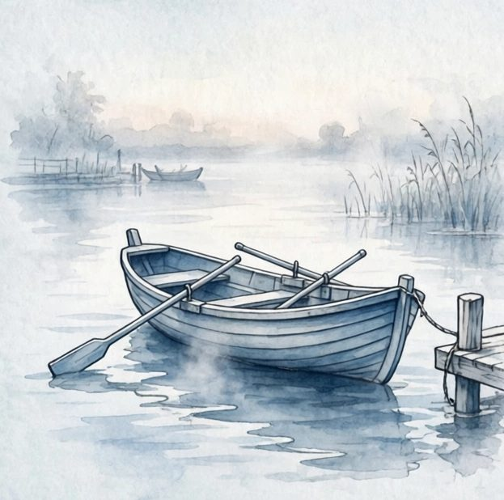
A rowing boat tied at a jetty at dawn, oars shipped, mist on the water.
The boat that rows itself home is this hall's most beloved impossibility, described at the Attempt Desk by sailors, ferrymen, and one homesick lighthouse keeper's daughter. The principle varies by teller: a keel weighted with memory, a sail trimmed to the smell of the home harbour, a small patient engine that knows one route perfectly. The details are argued about with great warmth and no conclusion, which everyone involved appears to prefer. Arrival is the only fixed point in the design. One teller insists on a lantern at the bow that brightens as the harbour nears, and will not be argued out of it.
Underneath the impossibility sits a practical wish anyone who has worked on water will recognise. The last mile home is the tired mile. Hands are blistered, the light is going, and the harbour seems to retreat at the speed of rowing. A boat that took that mile upon itself would be a kindness measured in shoulders. Inventors in this room have built models, and the models, towed in circles on the millpond, have so far expressed no opinion about home. The work continues at the pace of tinkering, which is to say contentedly.
The Keeper shelves the self-rowing boat among the wild inventions without requiring it to apologise for being unlikely. This hall has noticed that unlikely ideas, kept in good company and handled regularly, have a way of sending useful relatives into the world: better oarlocks, kindlier hulls, a lamp for the jetty that somebody finally built. The boat itself rides at its mooring in the picture, oars shipped, mist on the water, pointed in exactly the right direction, as if it knew. The models ride in a tin bath behind the workshop now, ballasted with spoons, awaiting a breakthrough in navigation or in longing.
65A Kite That Carries Letters
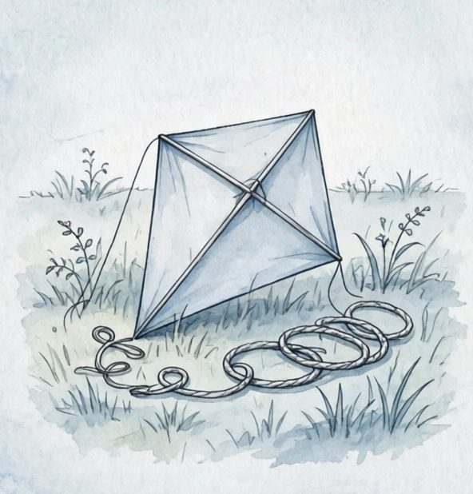
A paper kite resting on grass, its long tail coiled beside it.
The kite that carries letters began, as many inventions here began, with a distance that felt insulting: a valley between two farms, a river without a bridge in the walking season, a friend posted to a hill station where the mail took a month to do what the wind did in an afternoon. The proposed remedy flies at the end of a string. A light frame, a pocket for one folded letter, a tail dressed with ribbons for ballast and morale. Launch from the high field when the afternoon wind sets toward the neighbours.
Trials, in this room's imagination, are extensive and conducted with ceremony. The kite carries first a blank sheet, then a shopping list, then, on a documented summer evening, an actual letter, which arrives downwind in a state its recipient described as travelled. Handwriting survives altitude surprisingly well. So does sentiment. The post, where it exists, remains the reliable channel and nobody here suggests otherwise, but reliability was never the whole of correspondence. There is a kind of message that improves by having flown. A kite string, the house notes, is a modest technology, but it has never yet been improved upon for this purpose.
The Keeper keeps the kite's tail coiled neatly beside it, because a stored invention should look as considered as a working one. Children who visit this shelf are told the whole story, including the shopping list. They invariably ask whether the kite could carry a letter to someone further away, and the honest answer, which is that the wind would have to agree, has never yet disappointed one of them. The wind is understood to be a partner. Like the weather in every plan in this building, it is given room.
66The Clock That Runs on Weather
The clock that runs on weather keeps a different kind of time from the clocks in the hall below. It does not divide the day into hours. It reads the sky through a arrangement of vanes, lenses, and slow-moving fluids, and reports the day's character on a painted dial: sailing weather, planting weather, mending weather, weather for staying by the fire with the accounts. Its maker, a farmer's son with a watchmaker's hands, held that people consult the hour when what they need is the forecast, and built accordingly. Its dial is read the way a face is read, at a glance, in passing.
As a mechanism it is a respectable piece of trouble. Fluids thicken in January and must be coaxed. The vane freezes in the one storm of the decade when its reading matters most. These flaws are recorded on its card in the maker's own hand, without defensiveness, because this hall's standard for wild inventions is not perfection but candour. A device that announces the weather and admits its weaknesses is better company than a device that announces the time and pretends to be an authority on what to do with it.
The clock hangs in the stairwell now, where its dial can be consulted on the way to anywhere. Generations of the house have taken its readings in passing: mending weather, it said, on the morning the observatory roof was patched. The Keeper checks it out of affection rather than need. Some inventions succeed by being used daily. This one succeeded by teaching the household a vocabulary, so that even now, long after its fluids last moved freely, the family still names the days the way the clock taught them. The vocabulary outlasted the mechanism by decades, and shows no sign of running down.
67A Camera That Develops Slowly on Purpose
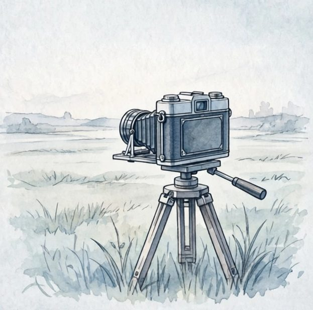
An old film camera on a tripod in a field, pointed at an empty horizon.
The camera that develops slowly on purpose was invented in protest, though its inventor, a gentle person, called it a preference. Ordinary cameras, she observed, had learned to deliver their pictures instantly, and the pictures had grown correspondingly forgettable. Her machine takes the opposite bargain. A plate is exposed in the field in the usual way, and then the camera keeps it, sealed and dark, developing at the pace of a season. The image surfaces months later, the way a garden surfaces, and is received like news from a country the photographer once visited.
Everything about the device is deliberately inconvenient except its optics, which are superb. It is heavy. It wants a tripod and a level head and a horizon worth the wait. Its inventor carried it up hills that lesser cameras have declined, and set it facing views she then walked away from, leaving the picture to finish without her. This, she said, was the entire point. A photograph that completes itself in your absence cannot be fussed over, and unfussed pictures keep the truth of the day they were taken. The horizon, of course, attends punctually, having nothing else scheduled.
Whether the slow camera would find other users is a question its inventor declined to pursue, and the hall respects the declination. It stands in its field in this picture, patient as furniture, aimed at an empty horizon that will not be empty by the time its plate is done: weather will have crossed it, birds, a season of grass. The Keeper files the invention under methods rather than machines. Slowness, deliberately chosen, is a tool like any other, and some work can only be done with it. Other cameras in the house are quicker, and say so, and are ignored with complete courtesy.
68The Game With a Million Rooms
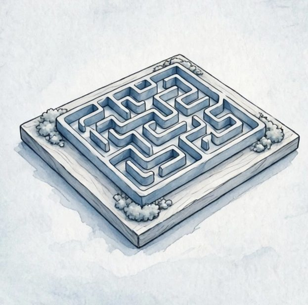
A miniature maze garden modelled in clay on a broad board.
The game with a million rooms exists, at present, as a model in clay on a broad board, and its inventor is content for it to be introduced that way. In the full design, a player walks from room to room, and every room has been made by somebody: laid out, furnished, lit, and left with one door open. A million rooms means a million makers, or a smaller number of makers with very long lives and good catalogues. The arithmetic is cheerfully impossible and is printed on the first page of the rulebook.
What recommends the game to this hall is not its size but its constitution. No room may be locked against future builders. No room may exist only to shame the rooms before it. A player who gets lost is not failing; the design holds that being lost in other people's work, surrounded on all sides by evidence of their attention, is one of the legitimate pleasures the game was built to provide. The clay model demonstrates the principle at garden scale, with hedges. Test players lose themselves in it for minutes at a time and emerge unhurried.
Fear, presented with a million rooms, immediately asks who could ever finish such a thing, and the inventor's answer is filed in this room's favourite handwriting: nobody, and everybody, in that order. The game is a structure for continuing, like the orchards and the timber frames elsewhere in the hall. Its millionth room will be built by hands not yet born, working in materials not yet invented, and the first room, the clay one, hedged and green, will still be holding its door open. The clay hedges are trimmed with nail scissors by a volunteer who takes the responsibility more seriously than most governments.
69A Staircase That Teaches Music
The staircase that teaches music looks, in this picture, like an ordinary stair that has been allowed to grow irregular: treads of different depths, a rail that rises in a gentle uneven rhythm. Its secret is in the ascent. Each tread is tuned. A footfall on the first step gives the lowest note; the stair climbs, step by step, a full scale and beyond, so that climbing the staircase is playing it, slowly, at walking tempo, in whatever shoes the climber happens to be wearing. The topmost tread gives the note the household agreed, after long debate, was the correct sound for arriving at bed.
Its inventor was a dancing teacher who had retired to a house with one stair and strong opinions about practice. Practice, she held, should live where life already happens, not in a separate hour guarded by guilt. A household that must climb to bed will rehearse daily without deciding to. Children in the house, she predicted correctly, would invent games on the stairs within the week, and would know more about intervals by the end of the month than any chart could teach them, because their ankles would know it.
The hall keeps the staircase in the wild section with respect, since its principle turns out to be portable. Instruments can be built into the furniture of a life: the gate that chimes, the floorboard by the stove tuned to warn of a familiar footstep. The Keeper had the treads measured for the record and found the scale honest within the tolerances of wood and weather. It plays slightly flat in the damp. Households, like orchestras, are permitted their seasons. Visitors climbing to the guest room play it unavoidably, and arrive upstairs mildly accompanied, which the house counts as hospitality.
70The Mirror That Shows the Workshop
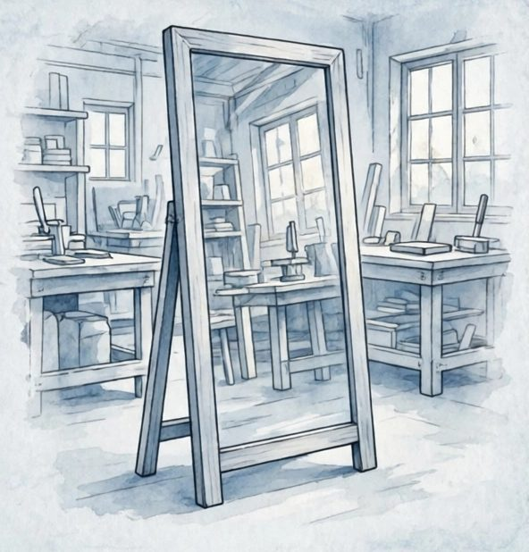
A tall mirror in a workshop reflecting benches and windows, nothing else.
The mirror that shows the workshop is, by any honest description, a plain tall mirror hung on a workshop wall, and its inventor would be insulted by any attempt to make it sound grander. Its claim is about placement. It hangs opposite the benches, angled with great care, so that a maker looking up from the work sees the whole room at once: the benches, the windows, the state of the light, the tools laid out or not laid out, the work of the room as the room itself sees it.
Makers who have used such a mirror describe a small daily correction it performs. Work looks different at one remove. The cabinet seen in reflection shows its unevenness kindly, the way a face in a morning mirror shows tiredness without malice. The room in reflection also shows its own order, and its lapses of order, and more than one maker has been known to tidy the bench mid-project simply because the mirror made the mess visible from a politer distance. No enchantment is claimed. Carpentry and glass are enchantment enough. The mirror, being glass, keeps its counsel between cleanings.
The hall includes the mirror among the wild inventions as a reminder that invention is sometimes only attention, installed. Nothing in it was new except the care of its angle. Yet apprentices ask for it by name, and visiting makers photograph its placement rather than its frame. The Keeper keeps the glass clean, which is the whole of its maintenance, and notes that the workshop it shows, benches and windows and nothing else, looks back at the room like a colleague: present, factual, and on the work's side. Its angle, once set, was marked on the floor in chalk, and the chalk line is renewed each spring.
71Inventions That Exist to Be Given Away
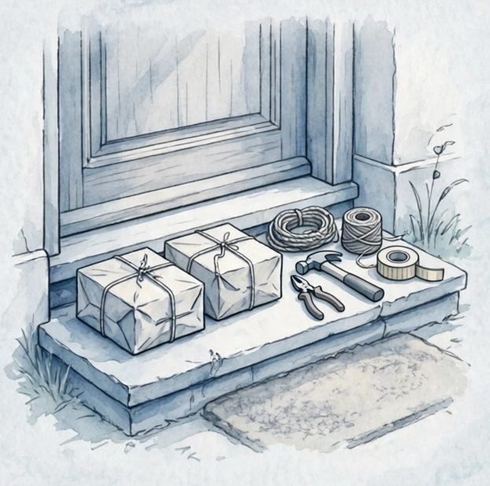
Parcels and tools laid out on a doorstep at first light, ready to be taken.
A number of the wild inventions in this section were never intended to stay in the building. Their inventors designed them for departure: the folding stool that any hall could copy, the seed press sized for a village, the lamp whose pattern was published in a newspaper with an invitation to improve it. These are inventions that exist to be given away, and their makers discuss them the way gardeners discuss cuttings. The original stays healthy. The future of the thing is out there, in other hands, being altered. Each was photographed once for the register before it left, and never priced.
Giving an invention away requires a particular piece of design work that keeping it never does. The thing must survive strangers: their materials, their weather, their improvements and their misunderstandings. Plans must be drawn for eyes that cannot ask questions. Tolerances must be generous, parts replaceable, instructions honest about the difficult step rather than proud of it. Inventors who design for departure learn to love the second-rate material and the available tool, because the gift travels only as far as other people's workshops allow. A gift that requires a specialist to assemble it is a puzzle wearing a gift's coat, and is filed differently.
The doorstep in this picture, laid out at first light, is the hall's emblem for the whole practice. What is given away properly is gone by the time the house wakes, and that is the success, not the loss. The Keeper keeps the inventors' register in the usual ink, with one difference: beside these entries there is no shelf number. The location column says, simply, elsewhere, in use, which the house considers the finest address an invention can have. The doorstep is swept by whoever finds it empty first, and the sweeping, too, is recorded nowhere and done properly.
72The Wildest Invention Is a Finished One
This room ends its survey of wild inventions with the wildest specimen it owns, and it is not the largest or the strangest. It is a small automaton bird on a perch, painted neatly, its key wound. It is wild because it is finished. Everything about it has been decided, executed, and closed: the last feather painted, the last spring seated, the mechanism under its cover doing precisely the modest, perfect thing it was built to do. Among hundreds of beautiful beginnings in this hall, completion is the rarest species.
Inventions resist finishing for reasons this hall understands well. As long as a thing is unfinished it can still be anything, and its maker can still be the person who might make it. Finishing narrows the world to one actual bird. It submits the work to the judgement of eyes, including the maker's own, and it closes the door on all the better birds that existed in possibility. Fear guards that door full time. It takes the removal of failure, or an unusual act of ordinary courage, to walk through it and turn the key.
The Keeper winds the bird on the first morning of each month, as a matter of house ritual, and it sings its small song to the empty room. The record of its making fills eleven pages, most of them unremarkable: measurements, materials, two false starts honestly entered. That is the hall's final word on wildness. The wildest invention is not the one nobody imagined. It is the one somebody finished, in full knowledge of every other thing it could have been, and let stand. Two false starts, honestly entered, are the pages the Keeper shows apprentices first, before the song is ever played.
73The Art Not Yet Made
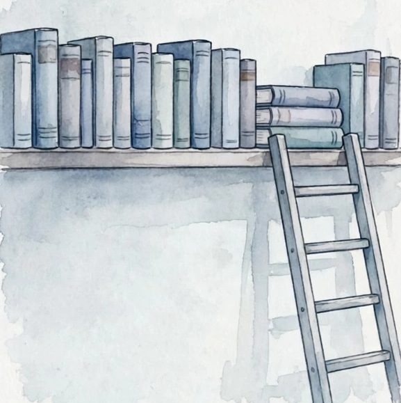
A high shelf of blank books in coloured bindings, a ladder leaning by.
The last section of this hall is given to the art that has not been made yet, and it is kept, by the Keeper's firm instruction, in perfect order. Blank books in coloured bindings stand on a high shelf, spines straight, dust absent. Nothing here is a ruin or a reproach. The unmade work is stored the way good materials are stored: dry, labelled, and ready. A visitor who expects a melancholy room will be disappointed, and the disappointment is part of the exhibit. This shelf is not a cemetery. It is a stockroom.
Every artist the Keeper has ever questioned keeps such a shelf inwardly, and most keep it in worse order than this one. Their unmade works crowd the good projects, borrow against them, and whisper at inconvenient hours. The hall's method is housekeeping. Give each unmade thing its binding and its place. Let it be specific: not a novel someday, but this novel, with its port town and its ferry timetable, waiting in blue cloth. Specificity, it turns out, is most of what the unmade were asking for. Named and shelved, they stop rattling.
The ladder leans by the shelf because the shelf is meant to be reachable, today, by whoever climbs. Nothing here is behind glass. If a maker takes a volume down and begins, the register records it without ceremony, in the same ink as the ships. If the volume stays, it stays clean. The house sells nothing and promises nothing, and on this shelf most of all: an unmade work owes its maker nothing, and the maker owes it nothing but a tidy place and the truth about why it waits.
74The Book on the Highest Shelf of the Mind
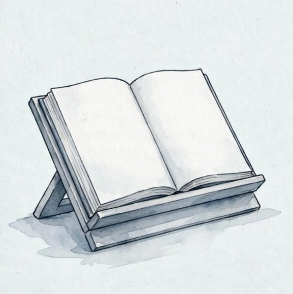
One book lying open on a lectern, its pages entirely blank.
On the highest shelf of the mind, by long tradition, sits the book too good to write. Everyone who works with words keeps a copy. Its port town is more vivid than any real town, its characters speak better dialogue in the corridor of the mind than any characters manage on paper, and its final chapter, experienced frequently by its author at three in the morning, is devastating. The book has one flaw, which is structural. It cannot survive being written, because writing is made of choices, and the book's perfection depends on none having been made.
The hall's treatment of this famous volume is brisk and kind. It is taken down, opened on the lectern, and looked at honestly: blank. Not full of secret gold, not a tragedy. Blank, the way a field is blank in January, which is to say full of ordinary potential and in need of the season's work. The Keeper does not mock the book; too many good writers have kept one. But the house rules require it to be shelved among the materials, not above them. It is a beginning pretending to be a masterpiece, and beginnings, in this building, are respected precisely by being begun.
What gets written instead, in the lives this room has watched, is usually a smaller and shaggier book, with a real town and dialogue that only sometimes lands. It is finished, which the high-shelf book will never be, and it can be handed to a reader, which the high-shelf book refuses to allow. The Keeper files both in the register. Only one of them gets read aloud on winter evenings, and it is not the perfect one. The perfect one remains on its shelf, welcome to stay, no longer mistaken for the standard the others must meet.
75The Photograph Not Yet Taken
The photograph not yet taken has a definite address in this room, because its photographer described it precisely: a field in first light, frost on the grass, the path crossing diagonally, and weather coming in from the west to give the sky something to say. She has owned the camera for eleven years. The field is twenty minutes from her door. The picture exists in her mind with the completeness of a print already framed, and yet the archive holds no negative, because the morning has never quite assembled itself to match the picture she is carrying.
The Keeper, who has heard many versions of this story, has stopped believing the weather is the obstacle. Perfect conditions are a reason a photograph can wait forever, since the world is under no obligation to repeat its best mornings on request. What the unmade picture is waiting for is permission to be slightly different from its own advance portrait: thinner frost, a duller sky, a magpie where no magpie was scheduled. The hall's counsel, entered on the record without emphasis, is that a photograph taken is a colleague of the one imagined, not its betrayer.
On the shelf beside the blank books stands an empty frame of the right size, kept for this picture, and the frame is not a reproach either. It is a reservation. The photographer passes the field most days and sometimes stops the car, and the house, which has made a study of such moments, regards the stopping as progress of exactly the kind this hall exists to honour. The shutter is a small sound. It will keep until she is ready to make it. So will the frost. The frame's glass is cleaned each season, in readiness, by whoever is passing with a cloth.
The Attempt Desk
One desk receives all correspondence for this house — questions, corrections, and word of any unattempted work a visitor has been carrying: the thing they would build, the answer that embarrassed them, the first version they cannot bring themselves to start. It is read in the order it arrives, and entered in the register of attempts.
76A Song Kept in One Voice Only
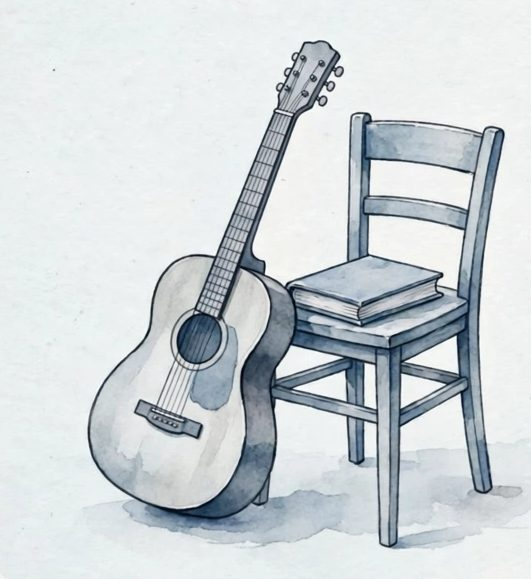
A guitar leaning against a chair in an empty room, the sheet music closed.
Some songs are kept in one voice only, sung in the maker's kitchen, in the car, in the last hour of a working day, and never written down, because writing them down would invite the world to have an opinion. This room keeps a chair for those songs. They are not unfinished, exactly. A song that has been sung whole, a hundred times, by the only voice that knows it, is as finished as most things in this hall. It simply has a circulation of one, and the Keeper files it under completed works with limited distribution.
The fear that guards such songs is easy to understand and is treated here with respect. A song carried privately cannot be misquoted, mishandled, or set to a purpose its maker hates. It also cannot be kept warm by anyone else, and that is the price, stated plainly on its card. Songs, of all the works in the building, are the most social in their construction. They are built to be carried by other voices, the way boats are built to be carried by water. A song in one voice is a boat in a field: sound, handsome, and not yet doing what it was made for.
The hall does not argue with the singers. It keeps the chair, the guitar, and the closed sheet music in good order, and it notes the cases, which are not rare, of songs released at last after twenty years of private keeping, usually into the keeping of one other person first. The register records these events without triumph, as weather is recorded. Something that was sealed is now slightly open, and the song, sung by two voices in a kitchen, has begun its travels. The guitar in the picture is in tune, as it happens, because its owner tunes it whether or not it will be played.
77The Film That Exists in Twelve Frames
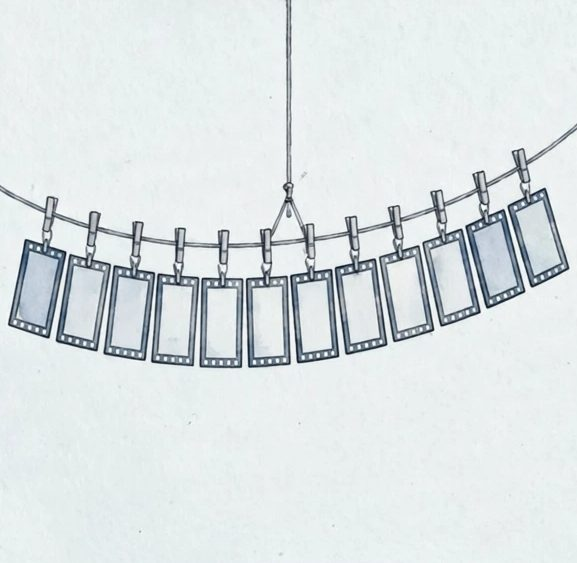
A strip of twelve blank film frames hanging from a cord by clips.
The film that exists in twelve frames can be screened, after a fashion, in this room: twelve still images, hung from a cord by clips, each one chosen by its maker with the care of a jeweller setting stones. A harbour at dawn. A table being laid. A hand resting on a gate. The frames do not move, and the film's maker maintains that the motion is supplied by anyone who walks the line slowly, the way a reader supplies the voices in a novel. Twelve frames, correctly chosen, imply the reels between them.
Behind the twelve frames stands the unmade film entire, and it is a large one: a whole valley's year, with its markets and funerals and first snows, shot by a person who has been composing it inwardly since childhood. The reels do not exist. The valley does, and is ageing at the usual speed, and the film's maker knows the arithmetic as well as anyone in this building. The twelve frames are what she has so far allowed the film to become, and the hall honours them as a beginning rather than a substitute. Beginnings, here, are load-bearing.
The Keeper hangs the strip where the light from the window moves across it through the day, so that the frames brighten and dim in sequence, dawn to dusk, like the single day the film would have covered. It is the closest thing to a screening the work has had. Visitors walk the line slowly without being asked. Somewhere between the table being laid and the hand on the gate, most of them understand that they are watching a film. The rest is reels, and time, and one person's continuing negotiation with both.
78Paintings That Would Need a Bigger Wall
Some paintings are unmade because of a simple problem of architecture: they would need a bigger wall. The painter who described them to the Keeper works in a room with one broad wall, and the compositions in her mind exceed it in every direction. They are crowd scenes, weather systems, whole harbours at the hour of departure, arranged on a scale that her ceiling declines to permit. She could paint them smaller, and has been advised to, by everyone, for years. The advice is filed in this room under kindnesses that miss the point.
Scale, the hall has already established, is a choice and not a test, and the choice cuts both ways. A painter is allowed to mean the size she means. The big canvases are not grandiosity; they are accuracy, the correct dimensions of the thing seen. What the unmade paintings wait for is not courage but square metres: a barn, a warehouse gable, a town willing to lend its longest wall for a summer. Such walls exist in the world in large numbers, mostly standing empty, and the Keeper keeps a list of them, out of professional habit.
The chalk line on the wall in this picture marks the height the largest painting would require, and visitors tend to stand under it the way people stand under a ship's hull in a dry dock, looking up. It is a useful line. It converts a private frustration into a public measurement, and measurements can be carried to other people and discussed without embarrassment. The painting remains unmade, shelved clean with the other waiting works. But its dimensions are on record now, and buildings have been found for less. Barns, the Keeper notes, have the additional virtue of already smelling of hay and turpentine.
79The Play With One Chair on Stage
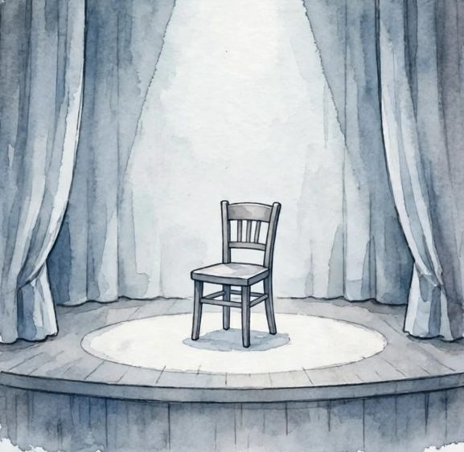
A stage with a single chair in a pool of light, the curtains still.
The play with one chair on stage exists in its author's desk drawer, complete, in a hand made fair by three copyings. It has one character, who is not exactly a character, and one chair, which is. Nothing else is required: no set beyond the light, no music beyond the house settling. The author has read it aloud once, to the empty room, at the speed of performance, and reports that it took the evening it was designed to take and that the chair, an ordinary kitchen chair borrowed for the reading, performed without fault.
Why it has never been staged is a question the author answers without self-pity, and the answer is the one this hall hears most often in its last section: the play is small, and smallness is mistaken for slightness, and slightness invites a kind of dismissal the author declines to audition for. The Keeper's filing is precise on this point. The play is not awaiting improvement. It is awaiting a room that understands its scale: fifty seats, one lamp's worth of light, an audience willing to watch a person and a chair for an evening and call it, as it would be, plenty.
The stage in this picture is therefore set and waiting, curtains still, chair centred in its pool of light. The hall keeps it dressed as a form of readiness. Theatres lend chairs without being asked twice; audiences for quiet plays exist in every town the Keeper has ever corresponded with. The play's shelf is clean and its script is legible to the last line. What remains is the smallest transaction in the performing arts: a date, a room, and somebody willing to sit in the chair. The chair, it should be said, is ready when the room is, having rehearsed its stillness for years.
80Art Made Slowly, on Purpose
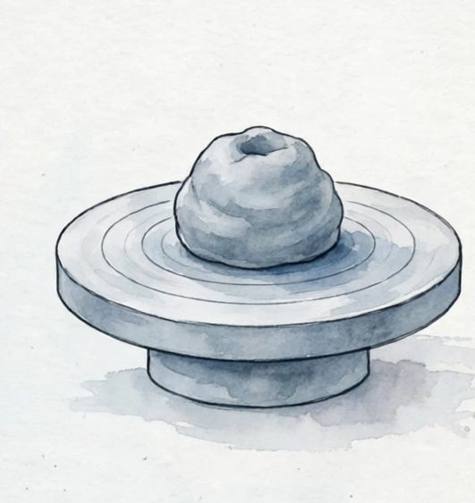
A potter's wheel with a centred lump of clay, untouched.
This section of the hall closes with a work so simple that visitors sometimes walk past it: a potter's wheel, a lump of clay centred on it, untouched. The clay belongs to a potter of real accomplishment whose finished work stands on shelves all over the county, in daily use, holding soup and flowers. This one lump, however, has been centred and recentred for the better part of a year. It is not blocked work, exactly. It is work being made slowly, on purpose, at a pace set by the maker's decision that this piece will not be hurried by anyone's expectations, including hers.
Slow making is the hardest kind to defend in ordinary company, because it resembles its opposite from a distance. Delay and deliberateness wear the same clothes. The difference, which the Keeper can state because this hall has watched it for years, is that deliberate slowness keeps its appointments with itself. The potter comes to the wheel daily. The clay is wedged, wetted, centred, assessed, and left. Hands that are merely afraid do not behave like that. They avoid the room. These hands are in the room every morning, in no hurry whatsoever, which is a completely different thing.
When the piece is finally thrown, and the register is confident that it will be, it will look like a pot. It will hold soup or flowers with the same competence as its hundred siblings, and no one eating from it will detect the year in it. That is the maker's intention and the hall's last exhibit in this section: slowness is not the absence of a result. It is a method whose result includes the maker's whole attention, fired in. The wheel turns. The clay waits. Both are working.
81The Work You Would Sign in Full
Every work in this house eventually reaches the signing table, and the table asks the plainest question in the building. Would you put your name to this, in full, where anyone could read it. Not initials in a corner, not a mark that could belong to somebody else, but the whole name, written at the size the work deserves. The question is not about pride. A signature is a statement of responsibility. It says the maker stood here, chose these materials, made these decisions, and is willing to be found standing by them.
The works that fail this test are instructive, and the house keeps a few near the table as reminders. They are not bad works, exactly. They are works made at half attention, or made to please a fashion, or made while the maker was already apologising for them in advance. Something in them stays unsigned even when the pen has done its work, because the maker's heart never arrived at the table. The question of this hall, asked honestly, tends to produce work the hand does not hesitate over. When failure is imagined away, what remains is usually a piece its maker recognises completely.
So the signing table is where the visitor is asked to picture the work whole. Not the safest version, trimmed to survive comment, and not the grandest version, swollen to impress. The version you would sign in full, in daylight, with the pen that is already on the table. That version has a particular feeling in the hand before it exists, a kind of recognition. The house suggests simply noticing which of your unattempted works carries that feeling. Those are the ones the rest of this hall is about, and they are rarely the loudest ones on the shelf.
82Unfashionable, and Made Anyway
A plain work coat on a hook, out of fashion and in perfect repair.
Fashion visits the workshop like weather, and like weather it is real, changeable, and a poor reason to rebuild the house. Every season brings word of what is made now and what is no longer made, which colours are finished and which forms are finished with them. The keeper listens politely and goes on mending the coat on the hook. The coat is out of fashion and in perfect repair, and those two facts have less to do with each other than the season's messengers would like you to believe.
A great many unattempted works are unattempted for exactly this reason. They were conceived in a year when nobody wanted them, and their maker quietly shelved them, waiting for the weather to turn. Some are still waiting, decades later, in excellent condition. The house takes the unfashionable work seriously because fashion is a measure of the moment, and a moment is a small sample. Work made to be wanted now must be remade whenever now changes its mind. Work made because it was needed by its maker ages at a slower and more honest rate.
This is not an argument for ignoring the world outside the door. Buyers, readers, and listeners are real, and their indifference is real information. It is an argument about order of operations. Make the thing first, in its unfashionable integrity, and let the question of its reception come second, where it belongs. The coat on the hook has outlasted eleven seasons of coats that were made to be seen in. It is warm, it fits the shoulders it was cut for, and its pockets are where the hands expect them. That is a complete defence, and the house rests on it.
83Art That Is Allowed to Be Imperfect
A watercolour left deliberately unfinished, its empty corner the brightest part.
On the wall of the workroom hangs a watercolour that was never finished, and it was never finished on purpose. Three corners carry the painting: a roof line, a field, a stretch of water laid in with confidence. The fourth corner is bare paper, and the bare paper is the brightest part of the picture. The maker stopped there because the painting had said what it had to say, and everything added after that point would have been mere coverage. Visitors ask about the empty corner more than about anything else in the room.
Imperfection, in this house, is not a defect to be confessed but a measurement to be read. A work is allowed to be imperfect the way a table is allowed to show its joins: the imperfection is where the making is visible. What the question of this hall removes is not imperfection but the fear of being caught at it. When failure costs nothing, a maker can leave the corner empty, let the seam show, sign the sketch instead of the fair copy. The work stops pretending to have descended from somewhere flawless and admits it was made by hands, in hours.
There is a discipline in this, and it is stricter than the discipline of polish. Anyone can keep working on a piece until its surface is smooth; it takes judgement to stop while the life is still in it. The house keeps the unfinished watercolour at eye level as a standing instruction. Make the work as well as you can make it today. Leave what today cannot do honestly undone, rather than covering it with effort that fools nobody. An imperfect work that exists outweighs, in this house's accounting, a perfect one that was never risked.
84The Shelf of Unmade Things, Kept Clean
Every visitor notices the shelf eventually. It runs along the north wall of the workroom, and it holds the unmade things: the folded plans, the boxed beginnings, the single carved leg of a table whose other three legs exist only in a notebook. What surprises visitors is not that the shelf exists but that it is clean. The labels are legible. The boxes are dusted. Nothing on the shelf has been thrown there in disgust, and nothing is hidden at the back in the manner of a shameful secret nobody mentions.
The house keeps the shelf clean because the unmade things are records, and records deserve order. Each label gives the work's name and the year it was set down, and some labels carry a line about why. Reading along the shelf is reading a history of one maker's judgement: the works abandoned because they were wrong, the works postponed because their season had not come, the works that were simply too large for the hours available. A clean shelf makes those distinctions visible. A neglected one lumps them all together as failure, which is the one thing they are not, individually.
Once a year the keeper takes everything down and considers the shelf empty, which is the only honest way to consider it. Most things go back. A few go to the bench, because the year has changed what the maker can do. A few go to the fire, with thanks, because their season has plainly passed and keeping them has become a form of clutter rather than memory. The shelf is never full and never empty for long. It is a working part of the house, and it is swept like one.
85A Life as a Work
A house plan drawn on a large sheet on a table, abstract lines only.
The largest sheet in the house is kept in the flat drawer, and on it, in pencil, is the plan of a life drawn the way an architect draws a house. There are rooms for work and rooms for rest, a long corridor of ordinary years, and more than one space left deliberately unlabelled. The drawing has been erased and redrawn so often that the paper has gone soft in places. The keeper is not embarrassed by the erasures. A plan that has never been revised is a plan nobody has lived in yet.
To treat a life as a work is not to treat it as a performance. Nobody is watching from a gallery, and there is no review in the morning papers. It is a smaller and more practical claim: that a life, like a house, is built by decisions, and that the decisions can be made deliberately rather than by drift. Where the doors go. Which rooms get the light. What is repaired promptly and what is allowed, for now, to wait. The plan on the sheet does not command the life. It simply keeps the builder's intentions where the builder can see them.
Most of the drawing, it should be said, is not grand. The plan's finest features are modest: a window placed for morning, a bench near the door for whoever comes in wet, storage enough that the work need not be cleared away each night. The house believes a life is made at this scale or not at all. The sweeping gestures, the total renovations, happen rarely and cost accordingly. But a doorway widened here, a room repurposed there, a wall taken down between two small spaces to make one good one: these are the renovations a life actually consists of.
86The Day, Designed Like a Room
A room arranged for one day: breakfast things at one window, a reading chair at the other.
If a life is a house, a day is a room in it, and rooms can be arranged well or badly for what they are meant to hold. The house arranges its standard day the way it arranges this room: breakfast things at the east window, where the light arrives first, and a reading chair at the west one, where the light ends. Nothing in the room is expensive. Everything in it is placed. The arrangement says, before a word is spoken, what the day is for and in what order its pleasures are expected.
Most days are not arranged; they are accumulated, the way a drawer accumulates. Obligations are put in first, wherever they land, and whatever the day was supposed to be for is fitted into the gaps, upside down if necessary. The house proposes the opposite procedure, which takes ten minutes the night before. Decide what the room is for. Put the important furniture in while there is still space to move it. Let the obligations arrange themselves around the placed things, as guests arrange themselves around a table that has already been set.
The designed day is not a perfected day, and the house distrusts those. Rain comes through the schedule like weather through a roof, and some days the room must hold grief, or drudgery, or a long wait in a corridor somewhere. Arrangement is not control. It is simply the difference between a room furnished on purpose and a room things were stored in. A day with breakfast at the light and the chair at the other window has a shape, and a shape can be lived in even when the day itself turns out hard.
87A Week Built by Hand
A week is the largest unit of time a person can actually hold, and the house treats it as a carpenter treats a length of timber: something to be measured before it is cut. Spread on the bench, a week is seven boards, none of them identical. Two are usually already promised to other people. One is warped by an old obligation that will not plane flat. The grain of the whole length runs toward rest at one end, whatever the calendar printed on it claims to the contrary on paper.
Building a week by hand means refusing to let it be assembled by whoever shouts first. The house marks its boards on Sunday, in pencil: this one for the deep work, this one for errands and their small frictions, this one left deliberately unassigned, because a week with no spare board in it cracks at the first unexpected load. The unassigned day is the one visitors question, and the keeper defends it the way a carpenter defends a margin in the measure. It is not waste. It is where the week's honesty lives.
No built week survives contact with the world exactly as drawn, and the house does not ask it to. Boards split. Deliveries fail. A friend arrives with news that rearranges everything, rightly. The point of building by hand is not rigidity; it is that when the week must be rebuilt mid-course, the builder knows the original design and can choose what to sacrifice. A week that was never designed has nothing to sacrifice in order. It simply loses whatever the week takes, which is usually the same thing every time, and usually the thing that mattered.
88The Career as a Long Craft
A long carpenter's bench worn by decades of work, oiled and ready.
The bench in the main room has been in use for decades, and its top is a map of the work done on it: saw marks from the early years, a dark ring where the oil can has always stood, one corner rounded by the passage of ten thousand sleeves. Nobody would call the bench ruined. Everybody who works here calls it ready. The house offers it as the true picture of a career, which is not a ladder and not a race but a surface that records, in its grain, everything it has been used for.
A craft career is built the way the bench was worn: by repetition at increasing judgement. The first years make the obvious marks, because the apprentice presses too hard and cuts too deep. The middle years are smoother and harder to read, the work of someone who has learned where the material resists. What accumulates is not speed, exactly, but knowledge of the particular: this client, this timber, this tool's temper in cold weather. Such knowledge cannot be hurried and cannot be faked, which is why the house respects the long bench more than the new one.
Imagining failure away changes a career's shape in one specific way. It permits the long apprenticeship to unfashionable skills, the years spent learning the unfashionable end of the trade properly, without the constant calculation of whether the investment will be seen to pay. The bench does not care whether its skills are admired this season. It cares that the hands know more than they did. A career built on that principle looks slow from outside and feels, from inside, like the only pace at which real work was ever going to get done.
89A House Arranged for Making Things
A house interior arranged around a central worktable, shelves on every wall.
This house was not built for making things; it was arranged for it, which is a different and more encouraging fact. One generation ago the main room held a formal table used twice a year. Now the worktable stands in the middle, under the best light, and the shelves have climbed every wall to hold the materials of half a dozen trades in daily use here now. Nothing structural was altered. The house simply stopped pretending its centre was for ceremony and admitted what its days were actually spent on.
Any dwelling can be rearranged in this direction, and the rearrangement is mostly a matter of honesty about frequency. The thing done daily goes where the light is. The thing done yearly goes to the far shelf, without guilt. Tools in constant use live within arm's reach of the bench, not in a distant cupboard that requires a small expedition and therefore discourages beginning. Visitors sometimes call the room untidy. The keeper corrects them, gently. It is not untidy. It is indexed by use, which is the only index the work itself consults.
The arrangement also protects the making from the rest of the life. Work in progress stays out on the table overnight, undisturbed, so that returning to it costs nothing in the morning. In a house arranged for appearances, every session begins with unpacking and ends with packing away, and the tax is paid daily in beginnings that never happen. Here, the half-built thing greets its maker at breakfast, patient and exactly as it was left. Many works in this hall exist only because a table was allowed to keep them.
90Friendships Are Also Built
The workshop has two chairs, and the second chair is the most instructive object in it. A great deal of making is solitary, but almost nothing worth keeping was made entirely alone, and the house counts friendship among the built things, constructed and maintained like everything else on the premises. A friendship has materials: time, attention, honesty delivered at a bearable weight. It has joints that need checking. It has seasons of heavy use and seasons when it stands in the corner, and the corner years test it more than the busy ones.
Built things require maintenance, and friendship is not exempt from the schedule. The house keeps its friendships the way it keeps its tools: cleaned after use, which means quarrels finished properly rather than left to rust; stored in the dry, which means confidences kept where they were given; and taken down regularly, because an unused tool and an unvisited friend deteriorate in the same quiet way. None of this is cold. A bench does not maintain itself out of sentiment. It is maintained because the work matters, and the maintenance is part of the work.
The question of this hall applies to friendship as plainly as to any work. If failure were impossible, most people would not build more objects. They would repair the friendships that pride has left unrepaired, attempt the honest conversation that has been postponed for years, invite the person whose company they actually want rather than the person it is safe to invite. The second chair has held all of these attempts at one time or another. It is worn smooth by them. The house considers it the hardest-used seat in the building, and the best investment the workshop ever made.
The Attempt Desk
One desk receives all correspondence for this house — questions, corrections, and word of any unattempted work a visitor has been carrying: the thing they would build, the answer that embarrassed them, the first version they cannot bring themselves to start. It is read in the order it arrives, and entered in the register of attempts.
91The Self Is a Draft, Not a Monument
A rough clay model of a house, reworked many times, still wet.
On the modelling shelf stands a small clay house that has been in progress for as long as anyone here can remember. Its roof has been a tower, a dome, and twice a plain gable. One wall is always suspiciously fresh. The keeper, asked when it will be finished and fired, gives the answer the house lives by: it will not be. The clay stays wet on purpose. A fired model can be admired or dropped, but it cannot be revised, and the thing this model represents is not finished being revised.
The self, the house holds, is a draft in this precise sense. A draft is not a failed version of the work; it is the work at its current stage, complete with crossings-out that show where the thinking improved. People who treat themselves as monuments must defend every old line as if it were carved, and the defence consumes the energy that revision would have used. People who treat themselves as drafts can strike a sentence through, in ink, in public, and continue the paragraph. The clay house changes its roof again without ceremony. Nobody calls that inconsistency. It is called working.
There is comfort in the wet clay, but it is not the soft kind. A draft obliges its author to keep deciding. The monument-maker decided once, long ago, and has been on guard duty since. The drafter decides weekly, in small ways: this habit stays, this opinion has expired, this room of the self needs its window enlarged. When failure is imagined away, the decisions get easier to make honestly, because a revision that fails is only another revision. The clay does not remember being a tower. It holds the present shape, and waits, workable, for the hands.
92Habits Are Small Creations Repeated
Seven small boxes in a row on a shelf, one for each day.
Seven small boxes stand on the shelf above the bench, one for each day, each holding the same few things: the short list, the key to the materials cupboard, a pencil cut to the keeper's preferred length. The ritual of opening the day's box takes less than a minute, and visitors who watch it tend to laugh at its smallness. The keeper does not mind. The house's position is that a habit is a creation, like a chair or a page, except that it is built out of mornings instead of timber, and must be rebuilt, briefly, every day.
Seen as creations, habits can be judged by the standards of the workshop. Is it made of honest materials, or does it depend on weather, mood, and other people's behaviour, which are the rotten timber of the trade. Is it the right size: a habit too large to repeat on a bad day will fail on exactly the days it was built for. Is it joined well to the habits around it, so that the day's structure carries weight as a frame rather than as separate sticks leaning on the maker's resolve, which is the weakest material in the house.
The question of the hall sheds a particular light here. Most unattempted habits are not unattempted because they are hard. They are unattempted because a broken streak feels, in advance, like a verdict, and so the work is never risked at all. Imagine the verdict away, and the habit shrinks to its actual size: a small thing made daily, allowed to be made badly, allowed to be missed and resumed without a hearing. The boxes on the shelf have all been missed, some of them often. They are still opened. That, the house says, is the entire mechanism.
93A Life With Margins Left Blank
The house book is written in a close hand, but the margins are wide, and the width is policy. In the old ledgers kept here, generations of keepers wrote their corrections, second thoughts, and small jokes in the margins, because the text of a life, like the text of a book, is never as final as its first writing pretends. A page filled edge to edge can only be read. A page with margins can be answered. The keeper leaves the white space on purpose, the way a builder leaves room around a door for the frame to settle.
A life scheduled to its edges has the same defect as the crowded page. Every hour is text; there is nowhere for the correction to go. When something unexpected arrives, as it does weekly, it must overwrite something already written, and the overwriting is always done in haste and usually at the expense of rest. The blank margin is the house's answer: hours that belong to no plan, kept empty not in laziness but in readiness. From the margin comes the unplanned visit, the sudden idea pursued the same afternoon, the nap that repairs the week.
Margins also change the feeling of the written part. Knowing the page has room, the hand writes more calmly in the text itself, less afraid of the error that cannot be corrected. Work attempted under the protection of a margin is attempted more honestly, because a margin is a standing admission that the first version will need annotation. The house does not prescribe the width. Some lives run well on a narrow one. But it records, as a finding of the hall, that no life it has examined was improved by filling the page completely.
94What I Would Create Is a Way of Working
An empty desk by a window with a view over rooftops and weather.
Ask the question of this hall often enough and a pattern emerges in the answers. People name objects at first: the book, the boat, the bakery, the garden. Ask again, later, and many give a different kind of answer. What they would create is not a thing but a way: a way of spending mornings, a way of deciding, a way of working that the objects would then fall out of, one by one, almost as by-products. The empty desk by the window is this block's emblem of that answer. Nothing on it yet. Everything about it deliberate.
A way of working is a real creation, though it cannot be put on a shelf. It has materials like any work: hours defended, tools chosen, an order of operations settled by experiment. It has a maker's signature as clear as any on the signing table; two people's ways of working differ as their handwriting does. And it outlasts its products. The book is finished and shelved, but the way of working that produced it goes on producing, in fields the maker has not entered yet. To build the way is to build the source rather than the instance.
This is why the house takes the answer seriously when a visitor gives it, and why the Attempt Desk keeps a form for it. The form asks plain questions. What would your mornings look like if the work could not fail. Where would you sit. What would you refuse, finally, to spend hours on. What would you do slowly that you now do in a hurry, and what would you do at once that you now postpone. The answers are rarely exotic. They describe, usually, an ordinary working day with the fear taken out of it, which the house considers a complete and buildable specification.
95The Years as a Workshop With Many Benches
A very long workshop with many benches, each lit by its own lamp.
Stand at the door of the long workshop at dusk and the benches go away into the distance, each with its lamp lit, each with different work on it. One holds the tools of a trade practised in youth. One holds a half-built thing from the middle years, its dust undisturbed. One, far down, is empty and swept, waiting for work nobody has assigned yet. The house uses this room as its picture of a life in time. The years are not a road. They are benches, and the work on all of them belongs to the same maker.
The picture corrects a common error. From inside a single year, the work of that year feels like the whole story, and its failures feel like verdicts on the whole shop. From the door, the proportions change. A ruined piece on the third bench is one item in a long, lit room. The benches before it hold finished work; the benches after it hold materials not yet cut. The keeper walks the whole length of the room every evening, not to inspect, but to remember the scale of the place. What happened today happened at one bench.
The empty bench at the far end is the room's most important furnishing, and the keeper keeps it swept against all argument. It stands for the work of years that have not arrived: the late trade, the second craft, the thing to be attempted at an age when attempting is supposed to be over. Visitors who count the benches and find their own age among them tend to stop at the bench of the present and look down the room. The lamps are lit all the way. The house leaves them lit on purpose, as its whole position on the future, stated in furniture.
96The Work and the Life Share One Roof
The workshop and the dwelling in this house are not separate buildings, and the arrangement was argued about, once, by people who believed work should be kept at a distance from life, in the interest of both. The argument lost. Under this roof, the door between the two stands open, and the kettle is as close to the bench as the tools are. The house's experience is that the distance model failed anyway, in both directions: work worries followed everyone home, and home griefs sat down at the bench uninvited, pretending not to be there.
Sharing a roof is not the same as having no door. The door exists, and it is closed at night, and the closing is a small ceremony the keeper performs without irony: tools down, lamp out, the day's work left mid-sentence if necessary. What the shared roof changes is the pretence. The maker's life is admitted as a material of the work, like light or timber, and the work is admitted as a material of the life. A bad week at the bench is spoken of at the table. A good morning in the garden is allowed to reorganise the afternoon.
The question of the hall lives under this roof too. Many works are unattempted not because the maker fears the work's failure but because the maker fears the rearrangement of the life around it: the hours it would take from other rooms, the person it would require them to become at the table. Imagining failure away does not settle those questions, but it separates them, and separated questions can be answered one at a time. The house is patient with that process. It has, after all, only the one roof, and everything the visitor is deciding about happens underneath it.
97Step One: Ask the Question in Writing
A blank page weighted by a pencil, a ruler, and a cooling cup of tea.
The steps of this house begin with paper, because the house has learned that a question asked only in the head is a question that can be quietly unasked. The head is a kind host; it lets the question visit at midnight and shows it out by morning, leaving no record. Paper is stricter. So the first step is to write the question down, in full, in ordinary words: what would I create if failure were impossible. Not a polished version for an audience. The working version, misspellings and all, weighted by a pencil so the draught from the door cannot take it.
Write the question, and then, the house insists, write it again more exactly. The first writing is usually a quotation, something the visitor has heard admired and borrowed for the occasion. The second writing is theirs. The difference shows in the nouns. Borrowed questions speak of success and impact and platforms. A person's own question speaks of a boathouse, a quartet, a school for six children, a machine for shelling peas. The exact nouns are the step's entire product. Until the question names real objects in a real place, it cannot be answered, only applauded.
Then leave the page where the eye will find it: on the desk, under the cup, in the front of the house book. The house does not ask for an answer at this step, and visitors who arrive with answers already prepared are suspected, kindly, of having brought somebody else's. The question needs time in the open air of the desk. It will collect dust, tea rings, and slow honesty. The steps that follow assume a question that has been lived with long enough to stop performing. Step one is finished when the written question no longer embarrasses its writer. It has become a tool, and tools are not embarrassing.
98Step Two: Take the First Answer Seriously
A single seedling in a pot on a sill, a notebook open beside it, abstract marks only.
Ask the written question and an answer arrives, usually quickly, usually the same one that has arrived for years. The second step is the discipline of not discarding it. Most visitors have a long practice of answering and immediately explaining why the answer does not count: it is too small, too late, too strange, too much like what they already do, not enough like what a serious person would say. The house asks them to write the first answer in the notebook beside the seedling and to let it stand there, unargued with, for the length of this step.
The first answer has one quality the later, cleverer answers lack: it was not composed for an audience. It rises from the part of the maker that keeps the real inventory, the part that knows which shelf is visited in imagination every week. Later answers are negotiated with respectability, with the market, with the maker's picture of themselves. The first answer predates the negotiation. It is often modest to the point of comedy: a window box, a pamphlet, a chair. The house has learned to trust the modesty. Small answers are usually honest ones wearing their true size.
Taking it seriously does not mean obeying it forever. It means granting it the standing of evidence. Write it down, date it, and let the following steps test it, the way any material is tested on the bench: by use, not by argument. Some first answers, tested, turn out to be doors into much larger works. Some turn out to be exactly themselves, one window box, faithfully kept, and the house honours those equally. What the step forbids is the reflex dismissal, the practiced laugh with which a person files their truest answer under nonsense. The notebook stays open. The seedling, indifferent to interpretation, grows.
99Step Three: Shrink the Work to One Afternoon
Every work named so far in this hall is too large to begin, and the third step is the house's remedy, which is not courage but folding. Take the large drawing of the work and fold it, the way a map folds, until one small square shows: the part of the work that could be attempted in a single afternoon, with materials already in the house. The rest of the sheet is set aside, not thrown away. It will be unfolded later, square by square. But the work begins at the size of an afternoon, or in the house's experience it does not begin.
An afternoon is the unit because it is honest. It has a beginning after lunch and an end before supper, and it does not permit the fantasy that the whole cathedral will be built in it. What fits in an afternoon is specific: the first page, the first joint, the survey of the site, the letter that asks the necessary question. Visitors protest that their folded square looks nothing like the finished work. The keeper agrees, and points out that a foundation trench looks nothing like a house, and yet no house in the parish was begun any other way.
The folded square also has a mercy built into it. If the afternoon's work fails, it fails at afternoon scale: one page, one joint, one letter, and the large drawing still intact on the side table, unharmed by the experiment. Nothing has been announced, nothing wagered that the maker cannot replace. The house believes most works are not refused outright by their makers. They are refused at full size, repeatedly, by a person who was never shown the fold. Step three is the fold. Everything after it depends on how small, and how real, the first square is.
100Step Four: Choose Materials You Can Afford to Ruin
Offcuts and spoiled pieces in a bin beside a bench, kept without shame.
The bin beside the bench holds the spoiled pieces, and it is emptied weekly, without ceremony and without an inquest. Its existence states the fourth step. Choose materials you can afford to ruin. The first version of anything is an experiment performed on matter, and matter charges for experiments in its own substance: the split board, the spoiled batch, the page crossed out so thoroughly the pen tears it. A maker working in materials too precious to ruin will not experiment. They will circle the work, polishing the approach, and the circling can last for years.
Affordable is a personal measure, and the house does not fix it. For one maker it means the cheap timber, the student paper, the borrowed instrument. For another it means time: the afternoon that can be spent without the spending being noticed by the rest of the life. The test is simple and physical. Hold the material and imagine its ruin, complete and immediate. If the imagination produces a flinch that stops the hand, the material is too dear for a first attempt. Put it back on the high shelf, where it belongs, and take down the stuff that invites the hand to learn.
This step quietly removes most of what the question of the hall imagined away. Failure is expensive mainly when the materials are, and the expense is often chosen, not imposed: the best paper bought for a first sketch, the full-sized site hired for a first trial. Works attempted in ruinable materials fail cheaply, and cheap failure is information at a fair price. The bin fills, the week ends, the bin is emptied. The keeper has noticed that makers who keep the bin visible keep their courage longer than makers who hide it, which is why it stands beside the bench, in the light, unashamed.
101Step Five: Make the Bad First Version
A rough first model in cardboard and tape on a table, its seams showing.
The fifth step is the one the whole staircase leans on, and it is stated without decoration: make the bad first version. Bad is not a warning here but a specification. The first version is required to be rough, because roughness is the evidence that it was made quickly, before the maker's defences could organise. The cardboard model on the table has tape on its seams and a wall that leans. It also has the one virtue no drawing in the flat drawer possesses. It exists, and things that exist can be improved, argued with, and measured.
The badness has rules. It must be bad in the ways that speed produces: approximate proportions, substituted materials, the difficult detail represented by a lump and a label. It must not be bad in the way carelessness produces, which is a different thing entirely. The maker of the model worked hard for two hours and cared about every joint; the model is bad because two hours and cardboard were the assignment. Visitors who nod at this distinction too quickly are asked to make something before supper. The distinction is easy to state and surprisingly hard to hold at the bench, where the hands keep trying to sneak quality in.
What the bad first version purchases is reality's opinion, delivered early and cheaply. The leaning wall teaches more than a month of imagining walls. The prototype that nobody can open teaches more than the design that everybody praised. This is the step where the question of the hall stops being a parlour game, because a made thing can fail in ways a contemplated thing cannot, and the failing is the tuition. The house keeps the cardboard model on the table throughout the remaining steps, in honour of its services. It is the ugliest object in the building and, the keeper maintains, the most respectable.
102Step Six: Show It to One Honest Person
When the first version exists, the sixth step is to show it, and the step is precise about the audience. One person. Not the crowd, not the committee, not the assembled opinion of the internet, and not the kind friend whose love makes all criticism dissolve on contact. One honest person, chosen for the quality of their attention: someone who will look at the work itself, say what they see, and stop there. The chair at the bench is kept for this person, and the house regards the choosing of them as part of the work, not a preliminary to it.
The showing has a form, and the form protects both parties. The maker states what the work is trying to be, in two sentences, no more. The honest person looks, in silence, for as long as the work requires. Then they report what they actually saw, which is frequently not what the maker described, and the gap between the description and the report is the most valuable measurement the workshop owns. Praise is permitted but carries no load. Blame is permitted and carries no load either. The load is carried by the specifics: this joint, this paragraph, this is where I stopped believing you.
Most unattempted works are unattempted because of an imagined showing, conducted before an imagined crowd, reaching an imagined verdict. Step six replaces the imagination with a chair, a person, and an afternoon. The verdict, when it comes from one honest reader, is almost never the catastrophe the imagination rehearsed. It is usually a list, and lists can be worked through. The maker leaves the showing with the list folded in a pocket and the model under one arm, and the house notes that they almost always come back. The crowd in the imagination, by contrast, has never once let anybody return to the bench.
103Step Seven: Name What Failure Would Actually Cost
A ledger open on a desk with columns of abstract figures, a candle beside it.
The seventh step takes the work to the desk, where the ledger lives, and asks the question the whole hall has been circling, now in its working clothes. If this failed, what would it actually cost. Actually is the operative word, and the ledger enforces it. The cost must be named in the currencies failure truly charges in: money spent and not recovered, hours spent and not returned, reputation dented in the eyes of specific named people, opportunities passed by while the work was attempted. Vague costs are not accepted. The ledger has columns, and the columns have headings, and dread does not fit in any of them.
Naming is slower work than fearing, and the slowness is the point. Fear conducts its business in the whole body at once, at midnight, in round numbers. The ledger works line by line, in lamplight, with the candle burning at a measurable rate. This material: so much. This many afternoons: so many. This person's good opinion, if the work is as bad as the worst rehearsal supposes: strained, perhaps, and repairable by a season of ordinary decency. Item by item, the catastrophe is required to present its accounts, and catastrophes, presented with accounts, have a tendency to shrink to the size of a tradesman's bill.
The house does not promise that every named cost will be small. Some works, honestly ledgered, are genuinely expensive to fail at, and the ledger will say so, and the maker will be glad to know it before the materials are ordered. But the step's finding, recorded over many years of candles, is that the named cost is almost always smaller than the feared one, and smaller in a specific way: it is finite. Fear's cost has no bottom. The ledger's cost has a total, and a total can be compared, budgeted, and, in the next step, calmly counted. The candle burns down. The page fills. The maker sleeps measurably better, though the house does not advertise this.
104Step Eight: Count That Cost Calmly
The same ledger closed, a ribbon marking the counted page.
The eighth step is the quietest in the house, and the easiest to mistake for nothing happening. The cost has been named; now it is counted, which the house distinguishes carefully. Naming lists the items. Counting stands back and reads the total as a sum in a life, set among the other sums that life already carries. A lost season of afternoons: how many seasons of afternoons has the maker already spent on less. A sum of money: against what reserve, earned over how many years, for what stated purpose if not, in part, for exactly this.
Counting also restores the proportions that fear disturbs. In the ledger, the cost of the failed work sits on the page facing the cost of the unattempted one, which the house requires to be entered as well. That second account is slower to fill in and less dramatic: the years of circling, the small daily tax of the shelved plan, the interest paid forever on a debt never actually incurred. Set side by side, the two totals do something neither does alone. They turn a drama into a comparison, and comparisons are the native language of judgement. The keeper has watched makers read the two pages and laugh, once, in recognition.
Then the ledger is closed, and the closing matters. A ribbon marks the page, because the question may need reopening, but the counting is done and is not to be redone nightly. Costs, in this house, are counted once, properly, and thereafter treated as settled facts, like the dimensions of a room. The maker's energy returns to where it is useful: the bench, the materials, the next square of the folded plan. Step eight ends with the ledger shut and the candle out, and the work, for the first time in the whole staircase, merely a piece of work again.
105Step Nine: Continue as If the Verdict Were Kind
The ninth step is a manner rather than an action, and it governs everything from here to the end of the staircase. Having named the cost and counted it, the maker is asked to continue as if the verdict were kind. The phrase is precise. It does not ask the maker to believe the verdict will be kind; the ledger has already replaced belief with arithmetic. It asks the maker to work in the manner of someone unburdened, at the ordinary pace, with the ordinary standards, in the ordinary light. Conduct first. The feelings, in the house's long observation, follow conduct at a distance of about a fortnight.
Working as if the verdict were kind has visible signs. The maker stops preparing the defence while making the work, which frees both hands. The work is shown earlier, talked about plainer, and abandoned more cleanly when it deserves abandoning, because none of it is carrying the maker's whole worth into the room. Shortcuts that exist only to impress are dropped. Slow methods that exist to be right are kept. Visitors notice that the benches governed by this step look calmer than the others, and that the makers at them take lunch. Lunch, the keeper says, is a reliable instrument reading.
The step is not a pretence, and the house is firm about the difference. A pretence denies the cost; this step begins by paying the cost the dignity of a ledger page and a counted total. What it refuses is the second payment, the one fear collects daily in advance, at compound rates, on a bill that may never arrive. Continue as if the verdict were kind, and the verdict, when it finally arrives, finds a body of work already made, a shelf of experiments already run, and a maker whose account with dread is, for once, paid in full.
The Attempt Desk
One desk receives all correspondence for this house — questions, corrections, and word of any unattempted work a visitor has been carrying: the thing they would build, the answer that embarrassed them, the first version they cannot bring themselves to start. It is read in the order it arrives, and entered in the register of attempts.
106Step Ten: Keep a Shelf for the Unfinished
A shelf of unfinished pieces wrapped in cloth, each tied with string.
Not everything attempted in this house is finished, and the tenth step provides for that fact with furniture. A shelf is kept for the unfinished: pieces set down mid-work, wrapped in cloth against the dust, each tied with string and labelled with its name and the date it was rested. The wrapping is the step's whole doctrine. A rested work is not a failed work, and the difference must be made visible, in cloth and string, or the maker's eye will file the shelf under failure and the house's accounting will be corrupted at its foundation.
Works earn their rest in several honest ways. Some are waiting for a skill the maker is still acquiring at another bench. Some are waiting for a material, a season, a collaborator, a sum of money being saved in a labelled jar. Some were attempted too early in a life and are waiting, quite simply, for the life to reach them. The label records which, because the kinds of waiting are different and only one of them, indefinite postponement without a reason, is the shelf's true enemy. The keeper reads the labels on the first of each month, the way a gardener walks a sleeping border, noting what stirs.
From the shelf, works return to the bench regularly, and the returns are among the house's best days. A piece rested for three years comes down and is finished in a week, because the maker has become, in the interval, the person the piece required. Others are unwrapped, examined, and honourably converted: the timber re-sawn, the pages mined for the two good paragraphs, the rest to the bin beside the bench, without shame. The shelf's final lesson is that unfinished is a state, not a sentence. Everything in the house is unfinished at some hour of the night. The string is tied. The work waits in good order.
107Step Eleven: Let the Work Teach the Next Work
Two benches side by side, one with finished work, one with work begun.
The eleventh step stands in the doorway between two benches. On the left, a finished work, with whatever the ledger and the honest reader have recorded against it and for it. On the right, the next work, barely begun. The step is simply this: let the first teach the second, deliberately, in writing, before the second is too far along to listen. Experience is a notoriously poor teacher when it is left to chance, because memory keeps the triumphs in detail and the failures in summary. The house reverses the filing. The lessons are extracted while the work is still warm.
The extraction has a form. Three things the finished work taught about materials. Three things about the maker's own habits at the bench: where the energy actually went, where the dread actually lived, which stage was postponed longest and why. One thing about other people: who helped, who judged early, whose reading proved true. The lists are written in the house book, in the margins left wide for the purpose. They are rarely flattering and never useless, and they take less than an hour, which makes the step the cheapest tuition in the entire staircase.
Then the new work is designed in the light of the lists, not in defiance of them. The material that failed is replaced or mastered. The stage that was postponed is scheduled first. The honest reader is invited earlier. This is the mechanism by which the benches in the long workshop differ from one another, down the years: each generation of work slightly less naive than the last, not because the maker grew grander, but because the book was consulted. The unfinished shelf teaches patience. The finished bench teaches method. Step eleven is the house's insistence that method, like everything else here, is a thing that gets made.
108Step Twelve: Ask the Question Again
The staircase ends where it began, and the twelfth step is to climb the first one again. Ask the question again: in writing, in full, in ordinary words. What would I create if failure were impossible. The first page is pinned above the bench, tea-ringed and soft at the corners, and a fresh page is laid beside it. The house guarantees nothing about the second answer except that it will not be the first one. The maker has crossed a staircase since writing it. The answer, if the steps have done their work, will have crossed too.
The changes are instructive to read. First answers tend to name the monument: the big work, the total transformation, the thing that would settle the question of a life. Second answers, in the house's records, are stranger and more specific. The maker who began by naming a masterpiece may now name a workshop for teaching children to mend things, or a correspondence, or one good chair, honestly made, in a series of one. The scale shrinks and the reality grows. What was imagined as an escape from the life is now imagined as a feature of it, buildable at one of its benches.
This is why the staircase is a staircase and not a door. Nobody graduates from it. The question is not a riddle with an answer kept at the top; it is an instrument, like the lamp or the ledger, to be used whenever the shelf of unattempted things grows heavy or the bench stands idle too long. Ask it the first time and it shows you the size of the wish. Work the steps and it shows you the size of the afternoon. Ask it again and it shows you the distance between the two, which is the exact distance this house exists to shorten. The fresh page is ready. The pencil, as ever, is cut to length.
109A Guide for the New Arrival
A hall entrance with a bench, a water jar, and a row of hooks for visitors' coats.
The new arrival enters by the main door, where the bench, the water jar, and the row of coats hooks state the house's terms before a word is read. Sit down first. Drink something. Leave your coat, which in this hall means the version of yourself you wear for arriving: the summary, the defences, the practised account of why nothing has been attempted lately. All of it will be returned at the door, unharmed. Nothing in the hall requires it, and the hooks are strong because the coats, over the years, have been heavy.
From the entrance, the hall runs in the order the visitor has just walked it: the question first, then the works it imagines, then the shape of a life built like a house and a week built by hand, and last the staircase of twelve steps, which is the hall's working core. The Attempt Desk stands where the staircase begins, and a visitor in a hurry is directed there without criticism. The hall is long by design. Browsers are welcome, readers are welcome, and the house keeps no record of how far anyone got or how long it took them.
Two rules govern the visit, and they are posted by the door in the keeper's hand. The first: everything here is read at walking pace, because the hall is about afternoons, and afternoons cannot be skimmed. The second: nothing in the hall is for sale, and nothing in it is promised, and any visitor who feels a promise forming has misread the furniture. The hall offers a question, some benches, and a ledger. What gets built from them is built elsewhere, at the visitor's own bench, under the visitor's own roof, at the visitor's own risk and credit. The water jar is refilled daily. Begin when ready.
110Questions People Ask at the Desk
A desk with a stack of letters, a lamp, and a chair kept for the visitor.
The Attempt Desk receives letters, and the same questions arrive so regularly that the keeper has begun answering them in batches, by lamplight, in a hand the regulars can read. The commonest letter asks where to begin, and the answer is always the same and always disappointing in the same way: at the folded square, with the afternoon, in materials already in the house. Correspondents hope for a beginning proportioned to the size of their wish. The desk replies that all beginnings are disproportionate, and that the disproportion is the mechanism, not the obstacle.
The second commonest question asks how long the staircase takes. The desk answers honestly: the steps can be read in an hour and worked in a season, and some makers work them for years, returning to the early steps with each new work, which the house considers the correct use. There is no schedule to fall behind. The only recorded failure at the desk is the letter that asks for a schedule so that its writer can announce, later, that they fell behind it and stopped. The desk declines, kindly, to issue such documents.
The third question is the tender one, and it arrives in worse handwriting than the others. What if the work, attempted at last, turns out to be exactly as poor as feared. The desk's answer is the ledger and the honest reader, and beyond them a plain statement of the house's position. A poor work, made, is a fact, and facts can be shelved, mined, answered, and outgrown. A poor work feared for twenty years is a landlord. It collects rent from every other room in the life. The letters are kept, the lamp is lit nightly, and the chair at the desk remains, as it has always been, for the visitor.
111Questions Skeptics Ask, Answered Carefully
The skeptics arrive with their coats on, and the house does not ask them to take the coats off. Their questions are good ones and are answered here at full length, because a hall that cannot survive its skeptics is a hall with the wrong furniture. The first question is the obvious one. Is this not all a trick of imagination, since failure, in the world outside, remains perfectly possible. Yes, the house answers. The question is a thought experiment, a lamp carried into one room at a time. Nobody at the desk believes the lamp abolishes the dark. It is for seeing the furniture by.
The second skeptic asks what the hall has to show for itself: where are the masterpieces, the fortunes, the famous names. The house answers that it keeps no such accounts, and distrusts houses that do. Its records are the ledger, the shelf, and the house book, and they record modest things: works attempted, costs counted, afternoons spent. A skeptic who requires the experiment to be validated by fame has imported a standard the hall exists to question. The coat stays on. The answer stands. The skeptic is offered the bench anyway, because the bench does not check credentials at the door.
The third skeptic is the keeper's favourite, because the question is the sharpest. Does imagining failure away not simply teach makers to ignore real risks, and walk smiling into real losses. No, the house answers, and points at the staircase. The steps do not ignore the cost of failure; they drag it to a desk, make it itemise itself in a ledger, and count it twice. What the question imagines away is not risk but the unlimited, unitemised dread that makes all risks look identical and infinite. A maker who has counted a cost and proceeds anyway is not reckless. They are the opposite of reckless, and the house will put its name, in full, under the distinction.
112What a Visitor May Take Home
A small parcel wrapped for the road, a folded map beneath it, abstract lines only.
At the end of the visit, the house permits the visitor to take certain things home, and the parcel at the door is packed with them, in the order they will be needed. First, the question, written down. It travels well, costs nothing, and improves with handling, and it is the only item in the parcel that the house asks to be used exactly as received. Ask it in writing, ask it plainly, and ask it again when the staircase has been climbed once. Most of what the hall has to give is folded inside that single sheet.
Second, the folding method and the bin. The visitor takes the knowledge that any work can be folded to the size of one afternoon, and that the fold, not the monument, is where making starts. With it goes permission, issued by no authority and therefore irrevocable, to work in materials that can be ruined without a hearing: the cheap timber, the student paper, the borrowed tool. Also in the parcel: the ledger's habit, of naming a cost until it fits in a column, and the string for the shelf of the unfinished, and one honest reader's address, if the visitor has one, which the house hopes the visit has suggested a way to earn.
What may not be taken home is equally definite, and the keeper checks the parcel against the list. No promise leaves the hall. No method is sold here, no programme issued, no result guaranteed or implied. The visitor's own risks remain the visitor's, undiminished by anything read at the benches, and the house's blessing, such as it is, consists entirely of the parcel and the walk back. The map beneath the parcel shows the road to one address only: the visitor's own workshop, wherever it currently stands, which the house maintains was the destination all along.
113The Work in Ten Years
The workshop seen again after ten years, ivy at the windows, the benches in use.
Come back in ten years and the workshop is recognisable, which is the first thing the house would want said about it. The ivy has reached the windows. The long bench has a new decade of marks, a darker ring where the oil can stands now, a corner rounded further. The shelf of unmade things has been emptied and refilled several times over; almost nothing on it is the same, and the shelf itself has not moved an inch. Continuity, in this house, is not the survival of objects. It is the survival of the order in which things are done.
The works of ten years ago are mostly gone, and their going is recorded without elegy. Some stand in other people's houses, being used, which was the point. Some are in the house book as lessons, mined for their timber and their two good paragraphs. A few, surprisingly, are on the bench again, down from the shelf of the unfinished, being completed by hands that finally know how. The keeper of that day will tell you that the ten-year view forgives almost everything except the unattempted. The failed works have all become something. The unattempted ones are exactly where they were left, the only exhibits in the hall that time does not improve.
As for the question, it is still asked, and the house expects it to be asked in ten years' time by a keeper with different nouns. What would I create if failure were impossible. The answers of that year will sound modest to the visitor who remembers the first ones, and they will be, by the only measure the house trusts, larger: folded smaller, costed plainer, attempted sooner. The lamps along the long room will be lit at dusk as usual. The empty bench at the far end will still be swept. Some things a decade changes completely. The swept bench is a promise the house makes to itself, and it has never needed to say so out loud.
114Every Unattempted Work Is a Confession
Among the labelled boxes on the shelf of unmade things stands one item with no label at all: a sealed envelope, its flap unopened, placed there so long ago that no keeper now living remembers whose it is. The house has decided, more than once, to leave it sealed. It is the hall's emblem of its hardest sentence, the one this block exists to say plainly. Every unattempted work is a confession. It confesses, in the maker's own hand and materials, the exact shape of what the maker believes they cannot survive.
Read the shelf this way and it becomes an honest document, more honest than any diary. The shelved novel confesses a belief about judgement. The folded business plan confesses a belief about money and shame, carefully itemised. The instrument in its case confesses a belief about beginning late, about the humiliation the maker expects from being a beginner at an age with grey in it. None of these beliefs was ever examined. They were simply obeyed, year after year, in the dark, at full strength. The envelope is only the shelf's most literal item. Everything else on it is an envelope too, with the confession written on the outside in the form of an excuse.
The house does not propose opening all the envelopes at once; that would be a cruelty dressed as a method. It proposes reading one label honestly, as the staircase teaches: write the question, take the first answer seriously, fold the work to an afternoon, count what the feared failure would actually cost. A confession, examined, usually turns out to be an estimate, and estimates can be revised by evidence. The envelope on the shelf stays sealed as a memorial to all the years when nobody thought to ask what was inside. Its lesson is not that the contents were terrible. Its lesson is that they were never read.
115Failure Modes, Listed Calmly
A weathered board by the door, carved with abstract tallies only.
By the door of the workshop hangs a weathered board, and on it the house keeps its tallies of the ways works fail, carved without names or dates, because the modes repeat across makers and years and it is the modes, not the makers, that the board exists to instruct. The first tally is the commonest. The work was enlarged until it could not be begun: every plan added a room, until the plan was a cathedral and the maker, quite reasonably, declined to start a cathedral on a Tuesday. The board's note beside this tally is one word. Fold.
The next tallies come in a family. The work was begun in materials too precious to ruin, and died of carefulness, unmarked and perfect. The work was shown, too early, to a crowd instead of one honest reader, and died of weather. The work was costed in dread and never in a ledger, and died of an infinite bill that a single evening's arithmetic would have reduced to a number. The work was finished, once, and its lessons were never extracted, so its twin died years later of the identical fault, in a different material, at a different bench. The board records this last mode with its longest tally, because it is the only one that wastes a failure completely.
The final tally is the board's reason for hanging by the door, where it is read on the way out. The work was never attempted at all. No marks, no spoiled materials, no lessons, no cost; the cleanest record on the board and the heaviest. The house lists these modes calmly, without heat, because heat has never repaired any of them, and because every maker who reads the board recognises their own tally within a minute. Recognition is the repair's first stage. The board gets one new carving in a slow year. The door swings past it daily. That is the whole exhibit, and visitors have been known to stand before it longer than before anything else in the hall.
116What the Keeper Does All Day
The keeper's bench at midday, tools rested, the day half done.
Strangers sometimes ask what the keeper of this hall actually does all day, imagining either a philosopher at a desk or a custodian with a broom, and the true answer is less dignified than the first and busier than the second. The keeper makes things. The hall is not administered from outside the work; it is kept by a working maker, at a bench, in the middle of a project that is currently at the stage where it looks worse than it did yesterday. The keeper's authority on unattempted work is not theoretical. It is the authority of the shelf, which contains, among other makers' exhibits, the keeper's own labelled boxes.
The day's order is plain. Mornings at the bench, because the hands are steadiest then. The ledger and the letters at midday, when the light at the desk is best and the morning's work can be thought about at one remove. The shelf read once a month, the bin emptied once a week, the water jar at the door filled daily, the tallies on the board carved when a new failure mode has been properly understood and not a moment before. Visitors are answered when they come, at the pace they come at. In the evening the keeper walks the long room, lighting nothing yet, remembering the scale of the place, as the house teaches.
And the keeper keeps, among the day's duties, one that appears in no list and governs all the others. The keeper asks the question. Not ceremonially, and not for display, but in the working way: written down, answered plainly, folded to an afternoon. The keeper's current question is pinned above the bench where visitors can see it, next to a previous one, tea-ringed, in a frame the keeper made badly and keeps for that reason. A hall about attempting, the keeper holds, must be able to show its workings. The unattempted work on the keeper's own shelf is not hidden. It is labelled, dusted, and waited for, like anybody else's.
117A Note from the Keeper of the Unattempted Work
We keep this hall for a simple reason, and it may as well be stated in our own hand. Every maker we have ever known, including the ones whose work covers walls and fills shelves, carries a second, invisible body of work: the unattempted. It is carried everywhere, it weighs more than the visible work, and it is the only collection in the world that grows by being ignored. We built these rooms to give that collection a shelf, a label, and a lamp. What is shelved can be looked at. What is looked at can, sometimes, be taken down and begun.
Our own shelves are not empty, and this note would fail its purpose if it pretended otherwise. We have our folded plans that stayed folded too long, our materials bought too precious and ruined too late, our letters to honest readers that were written in the head for years before they were written on paper. We do not keep this hall as people who solved the question. We keep it as people who ask it on schedule, with a pencil, and who have arranged a house so that the asking is difficult to postpone. The benches are our argument. The ledger is our evidence. The rest is furniture.
So the door stands as the visitor found it: the bench, the water jar, the hooks for the heavy coats. Take the question home in writing. Fold one work to the size of an afternoon. Count one cost until it fits in a column. And when the staircase has been climbed and the shelf read honestly, ask the question again, and see what the second answer knows that the first one did not. We will be here, at the bench, in the middle of a project that currently looks worse than it did yesterday, which we are told is a stage. — The Keeper of the Unattempted Work.
118What This House Is, and Is Not
A plain framed sheet with abstract marks only, hung level by the door.
This hall is a page for reflection and entertainment only. It was written to be read slowly and thought about, in the way a visitor thinks about the furniture of a house they do not live in. Nothing in it is an instruction for any particular person's life, and nothing in it should be taken as a claim about what any reader should do. The benches, the ledger, the shelf, and the staircase are devices of the page. They are offered as a way of looking, not as a method, a programme, or a course of any kind, and the house has no other wares.
Nothing here is sold, and nothing here is promised or claimed. The hall makes no representation about what attempting any work will bring, in money, recognition, or any other currency, and it advances no claim that imagining failure away changes the real conditions under which real work is done. It does not. Imagining failure away is a thought experiment that lasts for the length of a visit, inside one room at a time. Outside the door, real work keeps its real costs and its real risks, which are exactly what the hall's ledger exists to respect.
The house offers no advice about any real person's health, money, or safety, and nothing on this page is guidance on those subjects, whether practical, clinical, or financial. A reader whose circumstances raise questions in those areas will find the answers with the people and professions whose work they are. What this page can honestly provide is narrower: a question, a few rooms, and the record of how one imaginary house arranges its furniture around that question. The sheet is hung level by the door so that it is the last thing read on the way out, in full light, without decoration.
119Last Light Over the Workshop
The workshop at last light, windows glowing, the path home in shadow.
At last light the workshop changes its nature, and the keeper, whatever the day has held, stops to watch it happen. The benches empty one by one. The lamps come on along the long room and are turned down again in order. Work in progress is left where it lies, mid-sentence, under cloths, in the faith that the morning is a real place and can be trusted with it. The shelf of the unfinished is a dark line against the wall. The shelf of the unmade is another. Between them, in the last of the light, the house looks less like an argument and more like what it is: a place where things are attempted, at human scale, by hand.
The path home from the workshop is in shadow by this hour, and visitors who leave at last light walk it more slowly than they walked in. The house approves of the slowness. Nothing in the hall was designed to be carried at speed, and the parcel from the door, the question, the fold, the ledger's habit, is light enough that the slowness cannot be blamed on the load. What slows the visitor is the prospect of their own shelf, seen now in the hall's plain light, and their own bench, and the afternoon, any afternoon, that the first folded square would fit into. The house has no further statement to make on the walk. The walk is the statement.
Then the door is closed for the night, and the sign above it catches the last of the light, and the hall is finished with the visitor in the only sense it ever claimed: the visit ends. The question does not end, being paper, and portable, and patient. It goes home in the parcel and waits on the visitor's desk, weighted by a pencil, beside a cooling cup, while the days arrange themselves around it. The workshop will be here in the morning, the water jar filled, the kettle within reach of the bench. Attempted bravely, kept honestly: the house asks no more of the night than that, and no more of the morning either.
120Attempted Bravely, Kept Honestly
The hall ends the way the house ends every day: with the door closed, the tools down, and the work left in good order for whoever comes in the morning, who will be the same person, changed by exactly one day. There is no final exhibit. The last room is the workshop itself, seen once more without commentary: the long bench with its map of marks, the bin of spoiled pieces standing unashamed in the light, the cardboard model with its taped seams, the ledger shut on its ribbon, the two chairs, the seven boxes, the wide margins of the house book. Everything the hall has said is standing here in furniture, saying it again, more quietly.
What the house hopes the visitor carries away can be said in the space of one breath, and then the hall is done talking. A life is a made thing, built in days and habits, at benches, under one roof with the rest of living. A work too large to begin can be folded to an afternoon, attempted in materials that can be ruined, shown to one honest person, and costed in a ledger until the cost has a total and the total has a place in the sum of a life. None of this requires the world to change. It requires a bench, a question in writing, and the willingness to make the bad first version before the good one is permitted to be imagined.
The sign above the door is the house's whole doctrine, and it was carved to be read in both directions, coming and going. It does not say that the work succeeded. It does not say that the work was admired, or paid for, or remembered. It says the work was attempted, bravely, and kept, honestly: the attempt made at full size of heart, in folded squares of afternoons, and the record of it kept without inflation or shame, on shelves that are dusted either way. A visitor who can say that much, someday, about their own shelf has taken from this hall everything it was built to give. The door is closed. The lamps are down. The question is on the desk at home, and the morning, as ever, is a real place.
The Attempt Desk
One desk receives all correspondence for this house — questions, corrections, and word of any unattempted work a visitor has been carrying: the thing they would build, the answer that embarrassed them, the first version they cannot bring themselves to start. It is read in the order it arrives, and entered in the register of attempts.